library(readxl) # Import Excel data
library(sf) # Work with simple feature (vector) spatial data
library(RCzechia) # Spatial datasets for Czechia in WGS84
library(tidyverse) # Data manipulation and visualization tools
library(terra) # Handle raster data
library(tidyterra) # Work with raster data with ggplot (geom_spatraster)
library(ggspatial) # Add scale bars and north arrows to maps
library(paletteer) # Access around 2700 color palettes
library(ggthemes) # Extra themes and scales for ggplot2
library(RColorBrewer) # Provide several color palettes for R
library(exactextractr) # Fast raster value extraction over polygons
library(spatialEco) # Compute terrain indices (e.g., Heat Load Index)
library(whitebox) # Terrain analysis tools (e.g., TWI)
library(basemaps) # Download basemaps (OpenStreetMap, Esri, etc.)
library(patchwork) # Combine multiple ggplots
library(ggnewscale) # Add multiple color/fill scales in ggplot2
library(scatterpie) # Plot pie charts on maps
library(scales) # Customize scales, breaks, and labels in ggplot2
library(ggrepel) # Prevent text labels from overlapping in ggplot29 + 10 Maps
In this chapter, we will learn the basics of working with spatial data in R. Although we have specialised software for spatial calculations and creating maps (e.g. ArcGIS or QGIS), sometimes it might be helpful to do it R. For example, when we want to draw a big number of maps with small changes at the same time.
We will start by loading vector and raster data, creating spatial objects from CSV or XLSX files, transforming coordinate reference systems (CRS), and saving spatial data. Next, we will explore common spatial operations for both types of spatial data, such as clipping, buffering, and finding centroids. We will also learn how to calculate several terrain variables derived from a digital elevation model (DEM), including slope, aspect, the heat load index (HLI), the topographic ruggedness index (TRI), and the topographic wetness index (TWI). Finally, we will create a basic map of study area using open-source basemaps from providers such as OpenStreetMap or Esri. After that, we will create maps with visual properties such as color, size, or fill scaled according to attribute values, and we will also create grid maps.
We will use functions from the following packages:
9.1. Introducing spatial data
Spatial data, also known as geospatial data, contain information that can be mapped, such as the physical location, shape, and spatial relationships of objects on the Earth’s surface.
Spatial data can be classified into two main types:
Vector data (e.g., Shapefile, Simple Features, KML, GeoJSON) represent geographic features as points (e.g., vegetation plot, town), lines (e.g., river, road), or polygons (e.g., forest, lake). These features consist of vertices and paths and are typically associated with an attribute table that describes their properties.
Raster data (e.g., GeoTIFF, ESRI Grid, IMG) consist of a matrix of pixels (or grid cells), each storing a numerical value or category representing information such as elevation, temperature, or land cover.
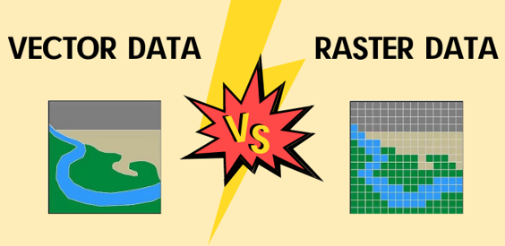
9.1.1. Vectors
First, we will load spatial data on grasslands in South Moravia, stored in Shapefile format. The read_sf() function from the sf package imports the file as a Simple Features (sf) object, which is a standardised data structure for representing spatial data in R. An sf object combines both geometric information (such as the shape and location of each grassland polygon) and attribute data (e.g., land cover type and area). This structure allows us to easily visualise, manipulate, and analyse spatial data directly within R.
grasslands_shp <- read_sf("data/grasslands_shp/LoukaPastvina_JMK.shp")
grasslands_shpSimple feature collection with 6682 features and 4 fields
Geometry type: MULTIPOLYGON
Dimension: XY
Bounding box: xmin: 15.56716 ymin: 48.62252 xmax: 17.63911 ymax: 49.63325
Geodetic CRS: WGS 84
# A tibble: 6,682 × 5
SHAPE_Leng SHAPE_Area DATA50_K DATA50_P geometry
<dbl> <dbl> <chr> <chr> <MULTIPOLYGON [°]>
1 1396. 32898. 4030000 louky, pastviny (((15.56967 48.93862, 15.5696…
2 1126. 24282. 4030000 louky, pastviny (((15.63268 48.89676, 15.6327…
3 11685. 398261. 4030000 louky, pastviny (((15.61876 48.91636, 15.6186…
4 1454. 26482. 4030000 louky, pastviny (((15.60223 48.90007, 15.6019…
5 4838. 171081. 4030000 louky, pastviny (((15.62469 48.90712, 15.6244…
6 1223. 40670. 4030000 louky, pastviny (((15.65175 48.89202, 15.6515…
7 2392. 56106. 4030000 louky, pastviny (((15.68347 48.89934, 15.6833…
8 20895. 963673. 4030000 louky, pastviny (((15.62271 48.94923, 15.6225…
9 1131. 33635. 4030000 louky, pastviny (((15.57518 48.92822, 15.5749…
10 2542. 111371. 4030000 louky, pastviny (((15.69191 48.8635, 15.69191…
# ℹ 6,672 more rowsAfter displaying the sf object, we can see its geometry type (in our case, multipolygon), bounding box (with coordinates in the current projection), and coordinate reference system (CRS), which for our data is S-JTSK / Krovak East North.
Next, we will read an Excel file containing vegetation plots from South Moravia, which we will later convert into an sf object.
plots_xlsx <- read_excel("data/vegetation_plots_JMK/CNFD-selection-2023-01-09-JMK.xlsx")
head(plots_xlsx)# A tibble: 6 × 7
PlotID Releve_area Broad.habitat.code All Soil_Reaction deg_lon deg_lat
<dbl> <dbl> <chr> <dbl> <dbl> <dbl> <dbl>
1 151 25 X 22 6.59 16.6 49.2
2 152 30 X 22 6.59 16.6 49.2
3 153 25 X 22 6.55 16.6 49.2
4 253 25 X 38 6.66 16.6 49.2
5 254 45 X 37 6.73 16.6 49.2
6 255 25 X 36 6.69 16.6 49.2To create an sf object from an XLSX or CSV file, we first need to examine the dataset and identify the columns containing spatial information, such as longitude and latitude.
In our dataset, these correspond to the columns deg_lon and deg_lat. We will also check the coordinate system used for these coordinates, which for vegetation plots is usually WGS 1984 (EPSG:4326).
names(plots_xlsx)[1] "PlotID" "Releve_area" "Broad.habitat.code"
[4] "All" "Soil_Reaction" "deg_lon"
[7] "deg_lat" plots_xlsx %>%
select(deg_lon, deg_lat) %>%
tail(5)# A tibble: 5 × 2
deg_lon deg_lat
<dbl> <dbl>
1 16.7 48.9
2 16.7 48.9
3 16.7 48.9
4 16.7 49.0
5 16.7 49.0Now, we will convert our data into an sf object using the WGS 1984 coordinate system. This is specified in the crs parameter by its EPSG code (a unique identifier for different coordinate reference systems).
plots_sf <- st_as_sf(plots_xlsx,
coords = c("deg_lon", "deg_lat"),
crs = 4326) From RCzechia, which provides a collection of spatial objects relevant to the Czech Republic, we can access features such as country borders (republika()), regions (kraje()), districts (okresy()), municipalities (obce_body()), rivers (reky()), water bodies (plochy()), forests (lesy()), and protected natural areas (chr_uzemi()). These objects are available in two resolutions ("low" and the default "high").
For our analysis, we will focus on polygons representing protected natural areas and regions, as well as lines representing rivers.
protected_areas <- chr_uzemi()
regions <- kraje(resolution = "high")
rivers <- reky()Now, we will visualise our data using ggplot2. We can customize it just like any regular ggplot object, adjusting parameters such as colour, fill, line width, and shape. For this, we use the geom_sf() functions, which is designed to draw spatial features (points, polygons, lines). In each geom_sf(), we have to specify the data with the spatial features.
ggplot() +
geom_sf(data = plots_sf, shape = 21, colour = "black", fill = "white", size = 0.8)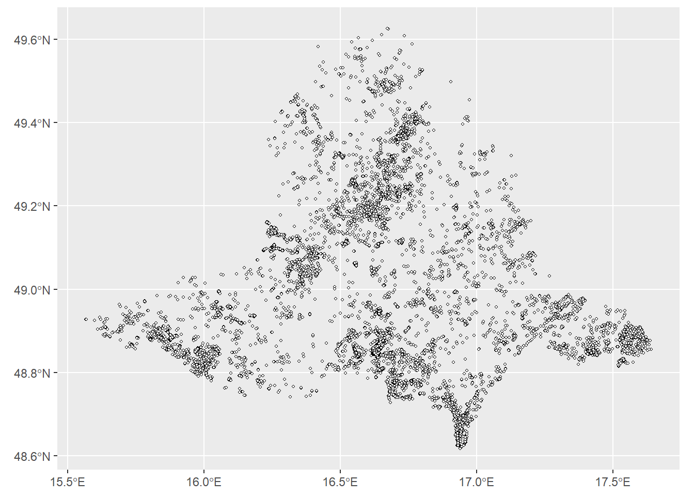
Alternatively, we can visualise vegetation plots and grassland polygons together in a single plot.
ggplot() +
geom_sf(data = grasslands_shp, colour = "darkgreen", fill = "lightgreen") +
geom_sf(data = plots_sf, shape = 21, colour = "black", fill = "white", size = 0.8)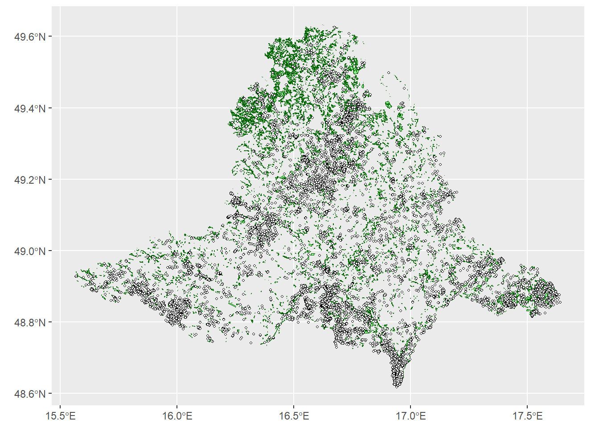
To select specific features from our sf object, we will use concepts from Chapter 2. Data Manipulation.
First, we will filter the regions to include only South Moravia, based on the NAZ_CZNUTS3 column.
South_Moravia <- regions %>%
filter(NAZ_CZNUTS3 == "Jihomoravský kraj")Next, from the vegetation plots, we will select only those located in forests, bushes and grasslands with an area smaller than 26 m²
plots_sf <- plots_sf %>%
filter(Broad.habitat.code %in% c("L", "K", "T") & Releve_area < 26)Finally, we can save the filtered vegetation plots as a Shapefile for later use:
write_sf(plots_sf, "data/vegetation_plots_JMK/plots_JMK.shp")9.1.2. Rasters
To work with raster data, we will use the terra package along with tidyterra. Our analysis will focus on a digital elevation model (DEM) for South Moravia, as well as mean annual precipitation and temperature from CHELSA.
First, we will load the DEM into R.
dem <- rast("data/dem_JMK/dem_100.tif")
demclass : SpatRaster
size : 1424, 2581, 1 (nrow, ncol, nlyr)
resolution : 0.001191282, 0.001191282 (x, y)
extent : 15.07694, 18.15164, 48.33532, 50.03171 (xmin, xmax, ymin, ymax)
coord. ref. : lon/lat WGS 84 (EPSG:4326)
source : dem_100.tif
name : dem_100
min value : 133.9051
max value : 956.6145 After displaying the raster, we can examine its dimensions (number of rows, columns, and layers or bands), spatial resolution, extent (in degrees and minutes, according to the raster’s coordinate system), coordinate system, and the minimum and maximum values of the raster data.
Alternatively, we can explore these properties using the following functions:
dim() - returns the dimensions of the raster (number of rows, columns, and layers).
dim(dem)[1] 1424 2581 1res() - provides the spatial resolution of the raster (size of each cell in the x and y directions).
res(dem)[1] 0.001191282 0.001191282ext() - gives the extent of the raster (the minimum and maximum coordinates in the x and y directions).
ext(dem)SpatExtent : 15.0769447375804, 18.1516423328084, 48.3353249715606, 50.0317098516864 (xmin, xmax, ymin, ymax)crs() - returns the coordinate reference system of the raster.
crs(dem)[1] "GEOGCRS[\"WGS 84\",\n ENSEMBLE[\"World Geodetic System 1984 ensemble\",\n MEMBER[\"World Geodetic System 1984 (Transit)\"],\n MEMBER[\"World Geodetic System 1984 (G730)\"],\n MEMBER[\"World Geodetic System 1984 (G873)\"],\n MEMBER[\"World Geodetic System 1984 (G1150)\"],\n MEMBER[\"World Geodetic System 1984 (G1674)\"],\n MEMBER[\"World Geodetic System 1984 (G1762)\"],\n MEMBER[\"World Geodetic System 1984 (G2139)\"],\n MEMBER[\"World Geodetic System 1984 (G2296)\"],\n ELLIPSOID[\"WGS 84\",6378137,298.257223563,\n LENGTHUNIT[\"metre\",1]],\n ENSEMBLEACCURACY[2.0]],\n PRIMEM[\"Greenwich\",0,\n ANGLEUNIT[\"degree\",0.0174532925199433]],\n CS[ellipsoidal,2],\n AXIS[\"geodetic latitude (Lat)\",north,\n ORDER[1],\n ANGLEUNIT[\"degree\",0.0174532925199433]],\n AXIS[\"geodetic longitude (Lon)\",east,\n ORDER[2],\n ANGLEUNIT[\"degree\",0.0174532925199433]],\n USAGE[\n SCOPE[\"Horizontal component of 3D system.\"],\n AREA[\"World.\"],\n BBOX[-90,-180,90,180]],\n ID[\"EPSG\",4326]]"Now we will plot the raster using ggplot2 and tidyterra, using it as a basemap for our vegetation plots and grassland polygons.
For the fill, we will use a palette from the paletteer and ggthemes packages. You can find the list of available palettes here. If we want to reverse the order of colours in the palette, we can set the direction argument in scale_fill_paletteer_c() to -1. The argument na.value argument in a ggplot fill scale defines how missing (NA) values are displayed on the map. In this case, they will be shown as transparent instead of being filled with a color. The transparency of spatial objects can be adjusted using the alpha argument in geom_sf() or geom_spatraster(). When alpha = 1, the objects are fully opaque, while smaller values make them more transparent. To change the variable name in the legend, we specify it in the name argument; otherwise, the default legend title will be “value”.
ggplot() +
geom_spatraster(data = dem, alpha = 0.8) +
scale_fill_paletteer_c("ggthemes::Red-Green-Gold Diverging", direction = -1, na.value = "transparent", name = "elevation") +
geom_sf(data = grasslands_shp, colour = "darkgreen", fill = "yellowgreen") +
geom_sf(data = plots_sf, shape = 21, colour = "black", size = 0.9, fill = "white") +
theme_bw()<SpatRaster> resampled to 500752 cells.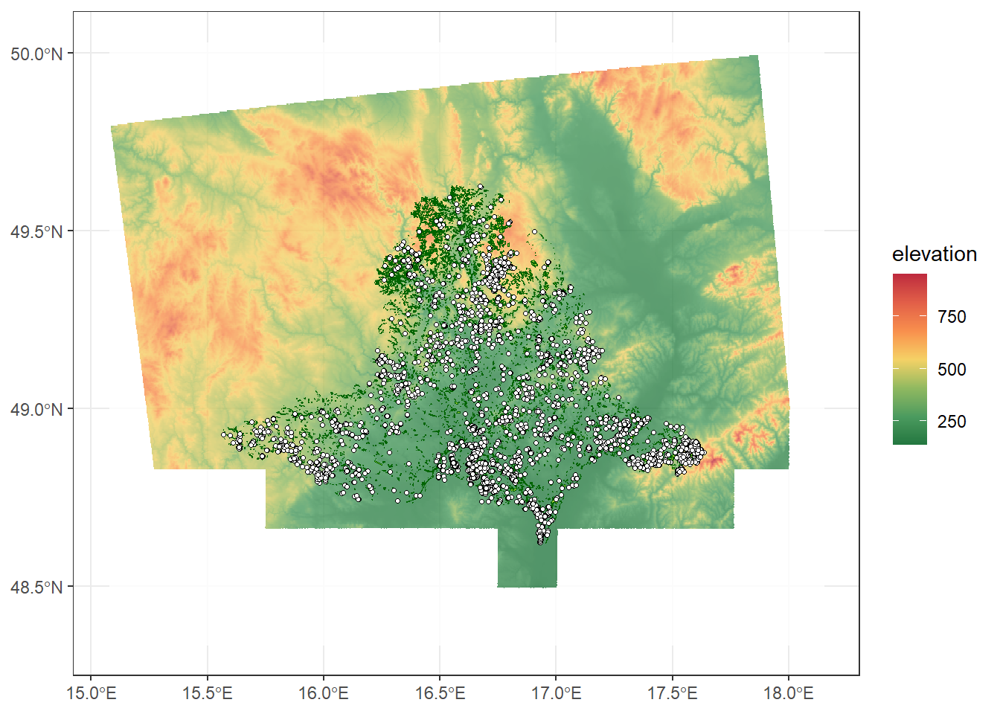
In many analyses, we often work with not just a single raster layer, but multiple related layers representing different variables or time periods. These collections of layers are commonly referred to as raster stacks or multi-layer rasters.
In R, such multi-layer rasters can be easily handled using the terra package. A raster stack allows you to store, manipulate, and analyze several raster layers together as one object, which is particularly useful for spatial modelling or time-series analysis.
All layers in a raster stack must share the same spatial properties, specifically the number of rows and columns (dimensions), spatial resolution, extent, and coordinate reference system (CRS). This ensures that the layers align perfectly, allowing pixel-by-pixel operations such as arithmetic calculations, statistical summaries, or predictions using spatial models.
Now, we will load the mean annual temperature and precipitation rasters for South Moravia:
temp <- rast("data/climate_raster/CHELSA_CR_t.tif")
prec <- rast("data/climate_raster/CHELSA_CR_s.tif")Next, we will create a raster stack by combining the temperature and precipitation layers:
climate_stack <- c(temp, prec)We can then save the stack to a file:
writeRaster(climate_stack, "data/climate_raster/climate_stack.tif", overwrite = T)A raster stack can be loaded into R in the same way as a single raster. The difference is that it contains multiple layers. The number of layers can be checked with nlyr().
climate_stack <- rast("data/climate_raster/climate_stack.tif")
nlyr(climate_stack)[1] 2Raster data can be converted to a data frame for easier manipulation or analysis. Each row in the resulting data frame corresponds to a raster cell and typically includes the cell coordinates (x and y) along with the cell value(s). Setting xy = TRUE ensures that the coordinates are included in the data frame together with the raster values. To convert the data into a tibble, we have to go through data frame.
This approach works not only for single-layer rasters but also for raster stacks. In that case, each additional layer becomes a separate column in the resulting data frame
dem %>%
as.data.frame(xy = TRUE) %>%
as_tibble()# A tibble: 2,368,433 × 3
x y dem_100
<dbl> <dbl> <dbl>
1 17.8 50.0 276.
2 17.8 50.0 276.
3 17.9 50.0 276.
4 17.9 50.0 276.
5 17.9 50.0 275.
6 17.9 50.0 276.
7 17.9 50.0 276.
8 17.9 50.0 278.
9 17.9 50.0 279.
10 17.9 50.0 280.
# ℹ 2,368,423 more rows9.2. Coordinate reference systems
Every spatial dataset must have a defined coordinate reference system (CRS). The CRS determines how coordinates relate to real-world locations on the Earth’s surface.
Geographic CRS - coordinates are expressed in degrees of latitude and longitude (e.g., WGS84 ).
Projected CRS - coordinates are expressed in linear units, usually metres, and are suitable for measuring distances and areas (e.g., S-JTSK / Krovak East North - the standard CRS for the Czech Republic; WGS 84 / UTM zone 33N - commonly used in the Czech Republic; WGS 84 / UTM zone 34N - used in Slovakia, ETRS89 / LAEA Europe - used for Europe).
The picture below shows the differences between the most commonly used CRS in the Czech Republic.

Always check the CRS before performing any spatial analysis!
We can check the CRS of our sf objects as follows:
st_crs(grasslands_shp)Coordinate Reference System:
User input: WGS 84
wkt:
GEOGCRS["WGS 84",
DATUM["World Geodetic System 1984",
ELLIPSOID["WGS 84",6378137,298.257223563,
LENGTHUNIT["metre",1]]],
PRIMEM["Greenwich",0,
ANGLEUNIT["degree",0.0174532925199433]],
CS[ellipsoidal,2],
AXIS["latitude",north,
ORDER[1],
ANGLEUNIT["degree",0.0174532925199433]],
AXIS["longitude",east,
ORDER[2],
ANGLEUNIT["degree",0.0174532925199433]],
ID["EPSG",4326]]st_crs(plots_sf)Coordinate Reference System:
User input: EPSG:4326
wkt:
GEOGCRS["WGS 84",
ENSEMBLE["World Geodetic System 1984 ensemble",
MEMBER["World Geodetic System 1984 (Transit)"],
MEMBER["World Geodetic System 1984 (G730)"],
MEMBER["World Geodetic System 1984 (G873)"],
MEMBER["World Geodetic System 1984 (G1150)"],
MEMBER["World Geodetic System 1984 (G1674)"],
MEMBER["World Geodetic System 1984 (G1762)"],
MEMBER["World Geodetic System 1984 (G2139)"],
MEMBER["World Geodetic System 1984 (G2296)"],
ELLIPSOID["WGS 84",6378137,298.257223563,
LENGTHUNIT["metre",1]],
ENSEMBLEACCURACY[2.0]],
PRIMEM["Greenwich",0,
ANGLEUNIT["degree",0.0174532925199433]],
CS[ellipsoidal,2],
AXIS["geodetic latitude (Lat)",north,
ORDER[1],
ANGLEUNIT["degree",0.0174532925199433]],
AXIS["geodetic longitude (Lon)",east,
ORDER[2],
ANGLEUNIT["degree",0.0174532925199433]],
USAGE[
SCOPE["Horizontal component of 3D system."],
AREA["World."],
BBOX[-90,-180,90,180]],
ID["EPSG",4326]]st_crs(South_Moravia)Coordinate Reference System:
User input: EPSG:4326
wkt:
GEOGCRS["WGS 84",
ENSEMBLE["World Geodetic System 1984 ensemble",
MEMBER["World Geodetic System 1984 (Transit)"],
MEMBER["World Geodetic System 1984 (G730)"],
MEMBER["World Geodetic System 1984 (G873)"],
MEMBER["World Geodetic System 1984 (G1150)"],
MEMBER["World Geodetic System 1984 (G1674)"],
MEMBER["World Geodetic System 1984 (G1762)"],
MEMBER["World Geodetic System 1984 (G2139)"],
MEMBER["World Geodetic System 1984 (G2296)"],
ELLIPSOID["WGS 84",6378137,298.257223563,
LENGTHUNIT["metre",1]],
ENSEMBLEACCURACY[2.0]],
PRIMEM["Greenwich",0,
ANGLEUNIT["degree",0.0174532925199433]],
CS[ellipsoidal,2],
AXIS["geodetic latitude (Lat)",north,
ORDER[1],
ANGLEUNIT["degree",0.0174532925199433]],
AXIS["geodetic longitude (Lon)",east,
ORDER[2],
ANGLEUNIT["degree",0.0174532925199433]],
USAGE[
SCOPE["Horizontal component of 3D system."],
AREA["World."],
BBOX[-90,-180,90,180]],
ID["EPSG",4326]]st_crs(protected_areas)Coordinate Reference System:
User input: EPSG:4326
wkt:
GEOGCRS["WGS 84",
ENSEMBLE["World Geodetic System 1984 ensemble",
MEMBER["World Geodetic System 1984 (Transit)"],
MEMBER["World Geodetic System 1984 (G730)"],
MEMBER["World Geodetic System 1984 (G873)"],
MEMBER["World Geodetic System 1984 (G1150)"],
MEMBER["World Geodetic System 1984 (G1674)"],
MEMBER["World Geodetic System 1984 (G1762)"],
MEMBER["World Geodetic System 1984 (G2139)"],
MEMBER["World Geodetic System 1984 (G2296)"],
ELLIPSOID["WGS 84",6378137,298.257223563,
LENGTHUNIT["metre",1]],
ENSEMBLEACCURACY[2.0]],
PRIMEM["Greenwich",0,
ANGLEUNIT["degree",0.0174532925199433]],
CS[ellipsoidal,2],
AXIS["geodetic latitude (Lat)",north,
ORDER[1],
ANGLEUNIT["degree",0.0174532925199433]],
AXIS["geodetic longitude (Lon)",east,
ORDER[2],
ANGLEUNIT["degree",0.0174532925199433]],
USAGE[
SCOPE["Horizontal component of 3D system."],
AREA["World."],
BBOX[-90,-180,90,180]],
ID["EPSG",4326]]All of our sf data are in WGS84 (EPSG: 4326).
We want to project all sf objects to WGS 84 / UTM zone 33N (EPSG: 32633):
plots_UTM33N <- plots_sf %>%
st_transform(32633)Alternatively, we can transform other layers to match the CRS of an already projected object (here, plots_UTM33N):
grasslands_UTM33N <- grasslands_shp %>%
st_transform(st_crs(plots_UTM33N))
protected_areas_UTM33N <- protected_areas %>%
st_transform(st_crs(plots_UTM33N))
South_Moravia_UTM33N <- South_Moravia %>%
st_transform(st_crs(plots_UTM33N))
rivers_UTM33N <- rivers %>%
st_transform(st_crs(plots_UTM33N))Finally, we will check the CRS of our raster layers:
crs(dem)[1] "GEOGCRS[\"WGS 84\",\n ENSEMBLE[\"World Geodetic System 1984 ensemble\",\n MEMBER[\"World Geodetic System 1984 (Transit)\"],\n MEMBER[\"World Geodetic System 1984 (G730)\"],\n MEMBER[\"World Geodetic System 1984 (G873)\"],\n MEMBER[\"World Geodetic System 1984 (G1150)\"],\n MEMBER[\"World Geodetic System 1984 (G1674)\"],\n MEMBER[\"World Geodetic System 1984 (G1762)\"],\n MEMBER[\"World Geodetic System 1984 (G2139)\"],\n MEMBER[\"World Geodetic System 1984 (G2296)\"],\n ELLIPSOID[\"WGS 84\",6378137,298.257223563,\n LENGTHUNIT[\"metre\",1]],\n ENSEMBLEACCURACY[2.0]],\n PRIMEM[\"Greenwich\",0,\n ANGLEUNIT[\"degree\",0.0174532925199433]],\n CS[ellipsoidal,2],\n AXIS[\"geodetic latitude (Lat)\",north,\n ORDER[1],\n ANGLEUNIT[\"degree\",0.0174532925199433]],\n AXIS[\"geodetic longitude (Lon)\",east,\n ORDER[2],\n ANGLEUNIT[\"degree\",0.0174532925199433]],\n USAGE[\n SCOPE[\"Horizontal component of 3D system.\"],\n AREA[\"World.\"],\n BBOX[-90,-180,90,180]],\n ID[\"EPSG\",4326]]"crs(climate_stack)[1] "PROJCRS[\"WGS 84 / UTM zone 33N\",\n BASEGEOGCRS[\"WGS 84\",\n ENSEMBLE[\"World Geodetic System 1984 ensemble\",\n MEMBER[\"World Geodetic System 1984 (Transit)\"],\n MEMBER[\"World Geodetic System 1984 (G730)\"],\n MEMBER[\"World Geodetic System 1984 (G873)\"],\n MEMBER[\"World Geodetic System 1984 (G1150)\"],\n MEMBER[\"World Geodetic System 1984 (G1674)\"],\n MEMBER[\"World Geodetic System 1984 (G1762)\"],\n MEMBER[\"World Geodetic System 1984 (G2139)\"],\n MEMBER[\"World Geodetic System 1984 (G2296)\"],\n ELLIPSOID[\"WGS 84\",6378137,298.257223563,\n LENGTHUNIT[\"metre\",1]],\n ENSEMBLEACCURACY[2.0]],\n PRIMEM[\"Greenwich\",0,\n ANGLEUNIT[\"degree\",0.0174532925199433]],\n ID[\"EPSG\",4326]],\n CONVERSION[\"UTM zone 33N\",\n METHOD[\"Transverse Mercator\",\n ID[\"EPSG\",9807]],\n PARAMETER[\"Latitude of natural origin\",0,\n ANGLEUNIT[\"degree\",0.0174532925199433],\n ID[\"EPSG\",8801]],\n PARAMETER[\"Longitude of natural origin\",15,\n ANGLEUNIT[\"degree\",0.0174532925199433],\n ID[\"EPSG\",8802]],\n PARAMETER[\"Scale factor at natural origin\",0.9996,\n SCALEUNIT[\"unity\",1],\n ID[\"EPSG\",8805]],\n PARAMETER[\"False easting\",500000,\n LENGTHUNIT[\"metre\",1],\n ID[\"EPSG\",8806]],\n PARAMETER[\"False northing\",0,\n LENGTHUNIT[\"metre\",1],\n ID[\"EPSG\",8807]]],\n CS[Cartesian,2],\n AXIS[\"(E)\",east,\n ORDER[1],\n LENGTHUNIT[\"metre\",1]],\n AXIS[\"(N)\",north,\n ORDER[2],\n LENGTHUNIT[\"metre\",1]],\n USAGE[\n SCOPE[\"Navigation and medium accuracy spatial referencing.\"],\n AREA[\"Between 12°E and 18°E, northern hemisphere between equator and 84°N, onshore and offshore. Austria. Bosnia and Herzegovina. Cameroon. Central African Republic. Chad. Congo. Croatia. Czechia. Democratic Republic of the Congo (Zaire). Gabon. Germany. Hungary. Italy. Libya. Malta. Niger. Nigeria. Norway. Poland. San Marino. Slovakia. Slovenia. Svalbard. Sweden. Vatican City State.\"],\n BBOX[0,12,84,18]],\n ID[\"EPSG\",32633]]"The climate rasters are already in WGS 84 / UTM zone 33N, which is the CRS we want for all our data. However, the DEM is in WGS84 (geographic), so we need to project it to match. This can be done either by specifying the EPSG code:
dem_UTM33N <- dem %>%
project("EPSG:32633")or by using the CRS of another raster:
dem_UTM33N <- dem %>%
project(crs(climate_stack))
writeRaster(dem_UTM33N, "data/dem_JMK/dem_UTM33N.tif", overwrite = T)9.3. Spatial operations
In this chapter, we will learn how to perform basic spatial operations with both vector and raster data. Spatial operations allow us to combine, compare, and analyse spatial relationships between geographic layers.
9.3.1. Vector operations
Vector spatial operations are used to analyse and modify point, line, and polygon data. The most common function for vector operations include:
st_intersection
Keeps only the areas that overlap between two layers, preserving attributes from both inputs.

For example, we can identify the protected areas located within South Moravia:
protect_areas_South_M_int <- protected_areas_UTM33N %>%
st_intersection(South_Moravia_UTM33N)Warning: attribute variables are assumed to be spatially constant throughout
all geometriesggplot() +
geom_sf(data = protect_areas_South_M_int, colour = "black", fill = "indianred1") +
theme_bw()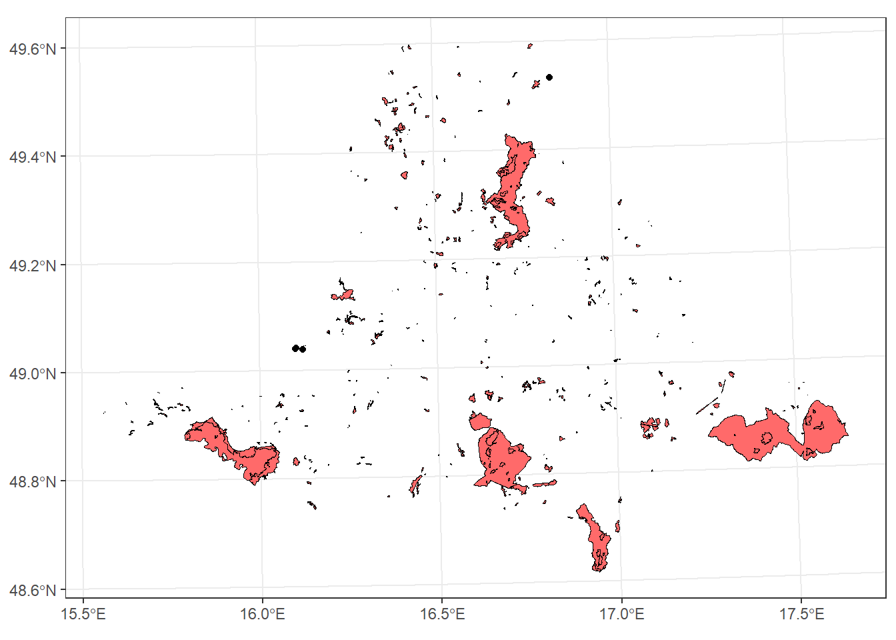
*st_crop
Crops features to the bounding box of another layer, without combining attributes.
For example, we can find the protected areas within the bounding box of the South Moravia region:
protect_areas_South_M_crop <- protected_areas_UTM33N %>%
st_crop(South_Moravia_UTM33N)Warning: attribute variables are assumed to be spatially constant throughout
all geometriesggplot() +
geom_sf(data = protect_areas_South_M_crop , colour = "black", fill = "indianred1") +
theme_bw()
*st_union
Merges all geometries (or overlapping polygons) into a single combined feature.

For example, we can create a single polygon representing all grasslands, resulting in only one feature in the attribute table:
grasslands_UTM33N_union <- st_union(grasslands_UTM33N)
ggplot() +
geom_sf(data = grasslands_UTM33N_union, fill = "lightgreen") +
theme_bw()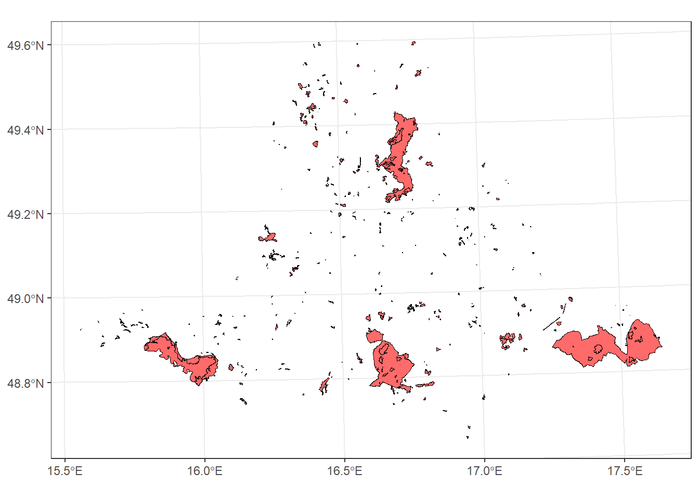
*st_difference
Removes the areas of one layer that overlap with another layer, keeping only the non-overlapping parts.

For example, we will identify areas outside the grassland polygons within South Moravia.
grasslands_diff <- South_Moravia_UTM33N %>%
st_difference(grasslands_UTM33N_union)Warning: attribute variables are assumed to be spatially constant throughout
all geometriesggplot() +
geom_sf(data = grasslands_diff, fill = "orange") +
theme_bw()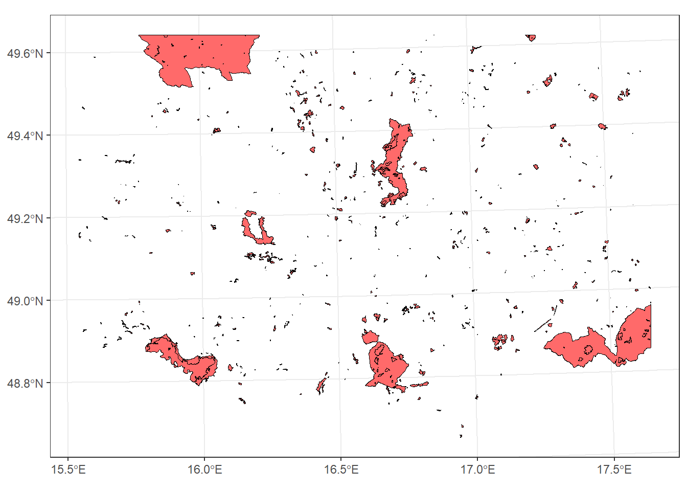
st_join
Joins the attributes of one spatial object to another based on their spatial intersection, typically between points and polygons.
We will demonstrate this using vegetation plots and protected areas. If argument left = TRUE is set in st_join, all features from the first layer are kept, and fields for non-matching records are filled with NA (similar to a left_join). In our case, it returns all vegetation plots, with NA values in the attributes from protected_areas_UTM33N for plots located outside protected areas.
plots_protect_left_T <- plots_UTM33N %>%
st_join(protected_areas_UTM33N, left = T)
ggplot() +
geom_sf(data = plots_protect_left_T, shape = 21, aes(fill = Broad.habitat.code)) +
theme_bw()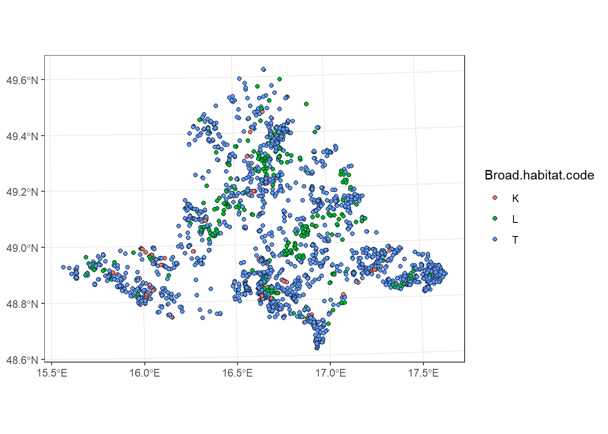
If left = FALSE, only features that spatially overlap are returned (similar to an inner_join). In our case, it returns only plots located within protected areas.
Note: if a geometry in the first layer overlaps multiple geometries in the second layer, multiple rows are created (duplicates).
plots_protect_left_F <- plots_UTM33N %>%
st_join(protected_areas_UTM33N, left = F)
ggplot() +
geom_sf(data = plots_protect_left_F, shape = 21, aes(fill = Broad.habitat.code)) +
theme_bw()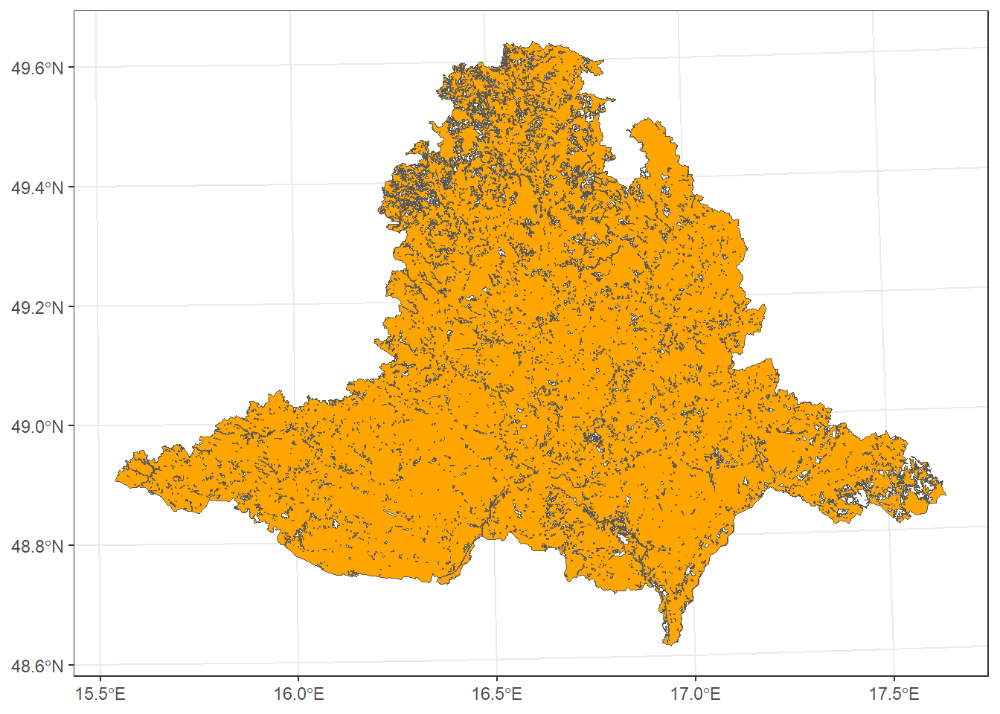
st_buffer
Creates a buffer zone around features at a specified distance. The units depend on the spatial data’s CRS (e.g., in the case of WGS 84 in degrees, and WGS UTM33N in metres).
For example, we will create buffer zones of 500 m around vegetation plots.
plots_buffer <- plots_UTM33N %>%
st_buffer(dist = 500)
ggplot() +
geom_sf(data = plots_buffer, fill = "red") +
geom_sf(data = plots_UTM33N, size = 0.1, color = "black") +
theme_bw()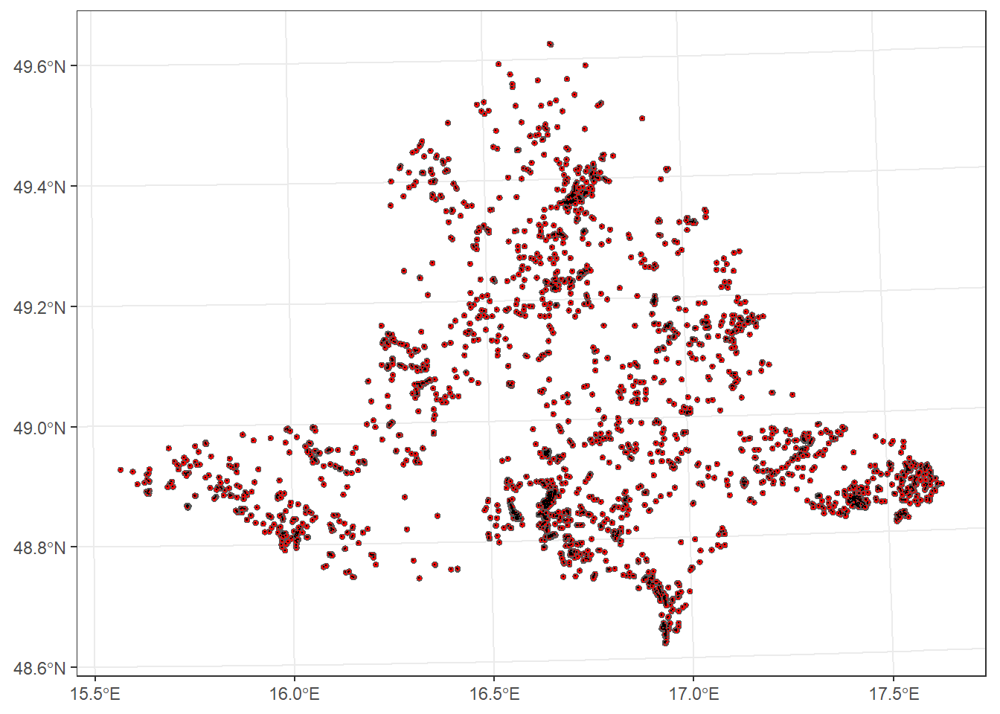
st_centroid
Calculates the geometric center of polygons (it may not lie inside the polygon)
For example, we will calculate the centroids of protected areas in South Moravia:
protected_areas_centr <- protect_areas_South_M_int %>%
st_centroid()Warning: st_centroid assumes attributes are constant over geometriesst_point_on_surface
Returns a point guaranteed to lie inside the polygon.
To compare st_centroid and st_point_on_surface, we will calculate points on the surface of protected areas in South Moravia and plot them:
protected_areas_point_surface <- protect_areas_South_M_int %>%
st_point_on_surface()Warning: st_point_on_surface assumes attributes are constant over geometriesggplot() +
geom_sf(data = protect_areas_South_M_int, color = "brown") +
geom_sf(data = protected_areas_centr, size = 1, color = "darkgreen") +
geom_sf(data = protected_areas_point_surface, size = 0.8, color = "black") +
theme_bw()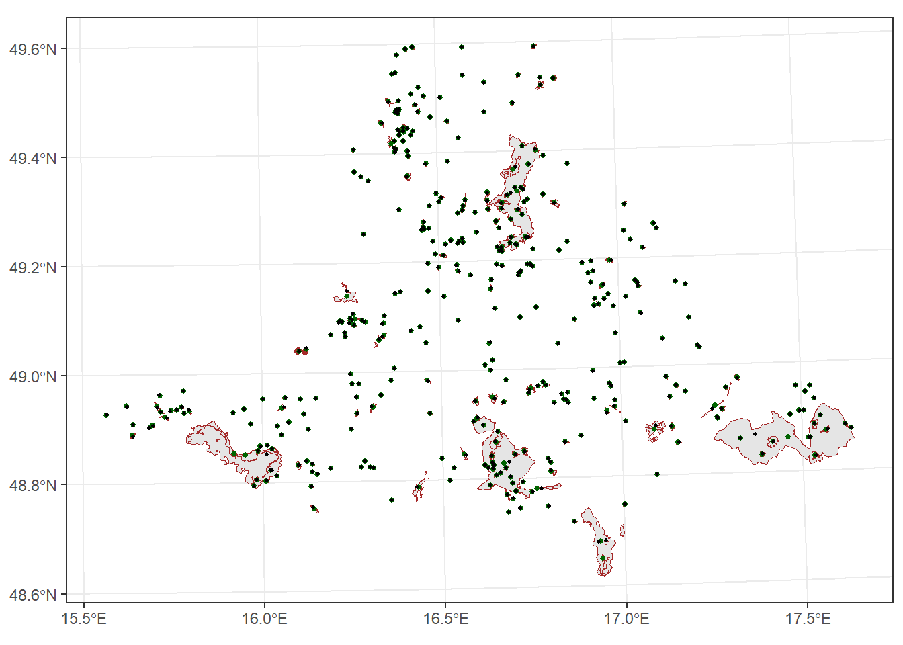
st_distance
Calculates the distances between geometries. The result is a matrix of distances in the units of the CRS (here, metres). However, it can be converted directly to a tibble.
To illustrate this function, we will calculate distances between vegetation plots and display only the first five rows.
plots_UTM33N %>%
st_distance() %>%
as_tibble() %>%
slice(1:5) # A tibble: 5 × 5,978
`1` `2` `3` `4` `5` `6` `7` `8` `9` `10` `11`
[m] [m] [m] [m] [m] [m] [m] [m] [m] [m] [m]
1 0 0 0 514. 67815. 57843. 57694. 57827. 56975. 57905. 57899.
2 0 0 0 514. 67815. 57843. 57694. 57827. 56975. 57905. 57899.
3 0 0 0 514. 67815. 57843. 57694. 57827. 56975. 57905. 57899.
4 514. 514. 514. 0 67360. 57334. 57186. 57318. 56466. 57397. 57391.
5 67815. 67815. 67815. 67360. 0 39876. 39824. 39699. 38991. 40224. 40221.
# ℹ 5,967 more variables: `12` [m], `13` [m], `14` [m], `15` [m], `16` [m],
# `17` [m], `18` [m], `19` [m], `20` [m], `21` [m], `22` [m], `23` [m],
# `24` [m], `25` [m], `26` [m], `27` [m], `28` [m], `29` [m], `30` [m],
# `31` [m], `32` [m], `33` [m], `34` [m], `35` [m], `36` [m], `37` [m],
# `38` [m], `39` [m], `40` [m], `41` [m], `42` [m], `43` [m], `44` [m],
# `45` [m], `46` [m], `47` [m], `48` [m], `49` [m], `50` [m], `51` [m],
# `52` [m], `53` [m], `54` [m], `55` [m], `56` [m], `57` [m], `58` [m], …st_area
Calculates the area of each feature’s geometry, in the units of the coordinate reference system. It returns a vector of class units, where each value corresponds to the area of one feature (e.g., polygon).
For example, we will calculate the areas of the grassland polygons. We converted the resulting vector to a tibble and returned only the first five features.
grasslands_UTM33N %>%
st_area() %>%
as_tibble() %>%
slice(1:5) # A tibble: 5 × 1
value
[m^2]
1 8913.
2 24266.
3 395547.
4 26464.
5 170969.st_length
Calculates the length of lines, in the units of the coordinate reference system. It returns a vector of class units, where each value corresponds to the length of a line.
For example, we will compute the lengths of rivers, convert the resulting vector to a tibble, and return only the first five features.
rivers_UTM33N %>%
st_length() %>%
as_tibble() %>%
slice(1:5)# A tibble: 5 × 1
value
[m]
1 16972.
2 12394.
3 20809.
4 1840.
5 1928.*st_intersects
Determines whether features overlap. Returns a list indicating, for example, which polygons each point falls within. If a point does not fall in any polygon, the corresponding list element is empty.
We will identify plots that intersect with grasslands.
plots_UTM33N %>%
st_intersects(grasslands_UTM33N)Sparse geometry binary predicate list of length 5978, where the
predicate was `intersects'
first 10 elements:
1: (empty)
2: (empty)
3: (empty)
4: (empty)
5: (empty)
6: (empty)
7: (empty)
8: 5273
9: (empty)
10: (empty)*st_within
Checks whether features are completely contained within another feature.
For example, we will check which grasslands are entirely within protected areas:
grasslands_UTM33N %>%
st_within(protect_areas_South_M_int)Sparse geometry binary predicate list of length 6682, where the
predicate was `within'
first 10 elements:
1: (empty)
2: (empty)
3: (empty)
4: (empty)
5: (empty)
6: (empty)
7: (empty)
8: (empty)
9: (empty)
10: (empty)9.3.2. Raster operations
Raster operations are used to manipulate and analyse raster data such as digital elevation model (DEM), climate layers, or satellite imagery. Common operations include cropping, masking, resampling, and calculating derived variables like slope or aspect.
crop
Crops a raster to a smaller spatial extent, usually defined by another object from which the extent can be obtained. The function crops the raster by the bounding box of that object, not exactly by the shape of the polygons.
For example, we can crop a DEM using the South Moravia polygon.
dem_S_Moravia <- dem_UTM33N %>%
crop(South_Moravia_UTM33N)
ggplot() +
geom_spatraster(data = dem_S_Moravia) +
scale_fill_paletteer_c("ggthemes::Red-Green-Gold Diverging", direction = -1, na.value = "transparent") +
theme_bw()<SpatRaster> resampled to 500716 cells.
Alternatively, we can define a bounding box manually by specifying the coordinates in the order xmin, xmax, ymin, ymax, using the same CRS as the raster:
dem_ext <- dem_UTM33N %>%
crop(ext(c(585411, 723539, 723539, 5599122)))
ggplot() +
geom_spatraster(data = dem_ext) +
scale_fill_paletteer_c("ggthemes::Red-Green-Gold Diverging", direction = -1, na.value = "transparent") +
theme_bw()<SpatRaster> resampled to 500526 cells.mask
Creates a raster in which only the cells that fall within (or overlap with) a given vector layer or another raster are retained, while all other cells are set to NA. The output raster keeps the same extent, resolution, and coordinate reference system (CRS) as the input raster.
Using crop() before mask() is recommended because it reduces the raster to the area of interest, which improves processing speed and reduces memory usage. Additionally, since mask() only sets cells outside the polygon to NA without changing the raster extent, plotting the masked raster in ggplot without prior cropping will result in a map with a much larger extent, showing empty areas outside the region of interest.
For example, we will crop and mask the DEM raster to the extent of South Moravia:
dem_S_Moravia <- dem_UTM33N %>%
crop(South_Moravia_UTM33N) %>%
mask(South_Moravia_UTM33N)
ggplot() +
geom_spatraster(data = dem_S_Moravia) +
scale_fill_paletteer_c("ggthemes::Red-Green-Gold Diverging", direction = -1, na.value = "transparent") +
theme_bw()<SpatRaster> resampled to 500716 cells.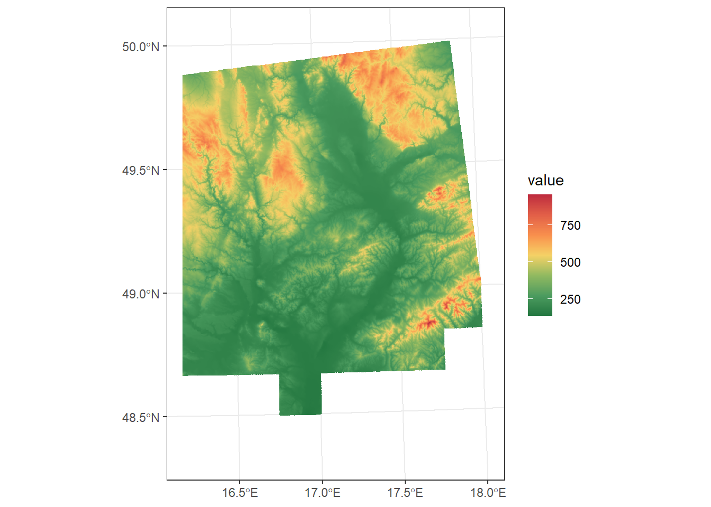
*aggregate
Changes the spatial resolution of a raster object by combining neighbouring cells into larger ones. You need to specify a function that determines how the values of the grouped cells are summarised (e.g., mean, sum, max). The cell size is adjusted by an integer factor (fact).
For example, if fact = 2, each cell of the temperature raster becomes twice as large, resulting in fewer cells and a coarser resolution:
temp %>%
aggregate(fact = 2, fun = mean)class : SpatRaster
size : 161, 281, 1 (nrow, ncol, nlyr)
resolution : 1730.9, 1730.9 (x, y)
extent : 292641.9, 779024.8, 5377548, 5656223 (xmin, xmax, ymin, ymax)
coord. ref. : WGS 84 / UTM zone 33N (EPSG:32633)
source(s) : memory
name : CHELSA_CR_t
min value : 1.704716
max value : 10.414715 *disaggregate
Performs the opposite of aggregate. It increases the spatial resolution of a raster by splitting each cell into smaller ones, as defined by the fact parameter.
temp %>%
disagg(fact = 2)class : SpatRaster
size : 644, 1124, 1 (nrow, ncol, nlyr)
resolution : 432.725, 432.725 (x, y)
extent : 292641.9, 779024.8, 5377548, 5656223 (xmin, xmax, ymin, ymax)
coord. ref. : WGS 84 / UTM zone 33N (EPSG:32633)
source(s) : memory
varname : CHELSA_CR_t
name : CHELSA_CR_t
min value : 1.397851
max value : 10.500000 resample
Changes the resolution, extent, or alignment of a raster so that it matches another raster. You can choose a resampling method, such as “near” (nearest neighbour), “bilinear” (bilinear interpolation), or “cubicspline” (cubic spline interpolation), depending on the data type and desired accuracy.
temp %>%
resample(dem_UTM33N, method = "bilinear")class : SpatRaster
size : 1946, 2295, 1 (nrow, ncol, nlyr)
resolution : 99.3589, 99.3589 (x, y)
extent : 505510.8, 733539.4, 5353564, 5546916 (xmin, xmax, ymin, ymax)
coord. ref. : WGS 84 / UTM zone 33N (EPSG:32633)
source(s) : memory
name : CHELSA_CR_t
min value : 2.397789
max value : 10.500000 raster algebra
Raster data allows us to perform mathematical operations on raster layers, either individually or in combination with other rasters (which must have the same resolution, extent, and dimensions).
For example, we can multiply all values of a DEM raster by 100:
dem_UTM33N * 100 class : SpatRaster
size : 1946, 2295, 1 (nrow, ncol, nlyr)
resolution : 99.3589, 99.3589 (x, y)
extent : 505510.8, 733539.4, 5353564, 5546916 (xmin, xmax, ymin, ymax)
coord. ref. : WGS 84 / UTM zone 33N (EPSG:32633)
source(s) : memory
name : dem_100
min value : 13393.33
max value : 95264.53 Or divide precipitation by temperature: .
prec / tempclass : SpatRaster
size : 322, 562, 1 (nrow, ncol, nlyr)
resolution : 865.45, 865.45 (x, y)
extent : 292641.9, 779024.8, 5377548, 5656223 (xmin, xmax, ymin, ymax)
coord. ref. : WGS 84 / UTM zone 33N (EPSG:32633)
source(s) : memory
varname : CHELSA_CR_s
name : CHELSA_CR_s
min value : 42.17617
max value : 924.65047 9.3.3. Combining vector and raster operations
Vector and raster data are often used together to relate spatial features to raster layers. Typical operations include extracting raster values for vector geometries.
The extract() function retrieves raster cell values corresponding to the locations of vector features (points, lines, or polygons). This is useful, for example, when you want to obtain the elevation for vegetation plots.
plots_UTM33N %>%
mutate(elevation = terra::extract(dem_UTM33N, plots_UTM33N)[,2])Simple feature collection with 5978 features and 6 fields
Geometry type: POINT
Dimension: XY
Bounding box: xmin: 541576 ymin: 5387566 xmax: 693311.1 ymax: 5498375
Projected CRS: WGS 84 / UTM zone 33N
# A tibble: 5,978 × 7
PlotID Releve_area Broad.habitat.code All Soil_Reaction
* <dbl> <dbl> <chr> <dbl> <dbl>
1 553 20 T 22 6.41
2 554 20 T 23 6.74
3 555 20 T 20 6.5
4 557 20 T 23 6.65
5 3039 4 T 1 7
6 6617 16 T 15 6.53
7 6619 16 T 12 6.67
8 6623 16 T 23 6.35
9 6629 16 T 16 6.44
10 6631 16 K 14 6.57
# ℹ 5,968 more rows
# ℹ 2 more variables: geometry <POINT [m]>, elevation <dbl>The resulting data frame contains the original vector data and an additional column with the extracted raster values.
*For polygon data, a more precise approach is provided by the exact_extract() function from the exactextractr package. It accounts for the fraction of each raster cell that overlaps with the polygon, resulting in more accurate summaries. You can compute various statistics such as mean, median, or sum of raster values.
For example, we can calculate the mean temperature for each grassland polygon:
grasslands_UTM33N %>%
mutate(mean_temp = exact_extract(temp, grasslands_UTM33N, 'mean'))9.4. Terrain derivatives from DEM
From a DEM, we can calculate various terrain derivatives. Common derivatives include:
Slope
The angle or steepness of a surface, usually expressed in degrees or radians. For plotting slope, we will use a color palette from the grDevices package, a list of which you can find here
slope_deg <- terrain(dem_UTM33N, v = "slope", unit = "degrees")
ggplot() +
geom_spatraster(data = slope_deg) +
scale_fill_paletteer_c("grDevices::terrain.colors", na.value = "transparent", name = "Slope") +
theme_bw()<SpatRaster> resampled to 500736 cells.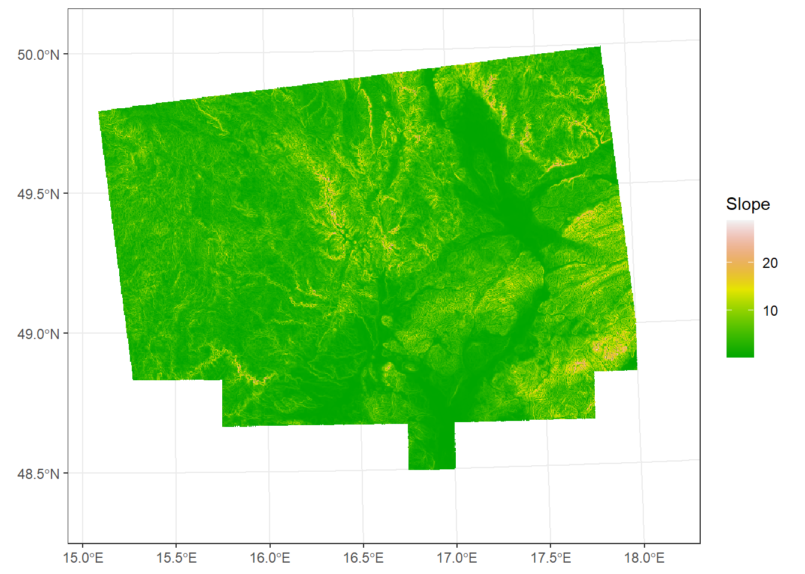
Aspect
The direction a slope faces, usually expressed in degrees or radians.
aspect <- terrain(dem_UTM33N, v = "aspect", unit = "degrees")
ggplot() +
geom_spatraster(data = aspect) +
scale_fill_paletteer_c("grDevices::rainbow", na.value = "transparent", name = "Aspect") +
theme_bw()<SpatRaster> resampled to 500736 cells.*Heat load index
Provides a refined estimate of relative slope warmth by incorporating latitude, slope, and aspect to approximate potential annual direct solar radiation (McCune and Keon, 2002). Values range from 0 (coolest) to 1 (warmest):
HLI <- hli(dem_UTM33N, force.hemisphere = "northern") Using folded aspect equation for Northern hemisphereggplot() +
geom_spatraster(data = HLI) +
scale_fill_paletteer_c("grDevices::YlOrRd", direction = -1, na.value = "transparent", name = "HLI") +
theme_bw()<SpatRaster> resampled to 500736 cells.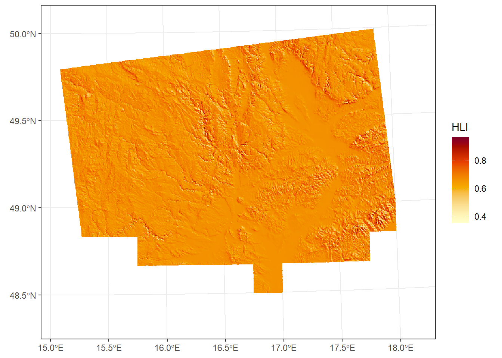
*Topographic ruggedness index
A quantitative measure of terrain heterogeneity, calculated as the mean of the absolute differences between the elevation of each cell and the elevations of its eight surrounding cells. The resulting value represents the local variability in elevation, expressed in the same units as the DEM (e.g., meters).
TRI <- terrain(dem_UTM33N, v = "TRI")
ggplot() +
geom_spatraster(data = TRI) +
scale_fill_paletteer_c("grDevices::RdYlBu", direction = -1, na.value = "transparent", name = "TRI") +
theme_bw() +
theme(legend.position = "bottom")<SpatRaster> resampled to 500736 cells.*Topographic wetness index
TWI quantifies the effect of topography on soil moisture distribution. It combines the upslope contributing area (representing water supply) and the local slope (representing drainage potential) for each cell in a DEM. Higher TWI values indicate areas more likely to accumulate water, while lower values correspond to well-drained locations.
# Downloads and installs the WhiteboxTools executable. You only need to run this command once; after installation, the tools are ready to use.
whitebox::install_whitebox()Performing one-time download of WhiteboxTools binary from
https://www.whiteboxgeo.com/WBT_Windows/WhiteboxTools_win_amd64.zip
(This could take a few minutes, please be patient...)
WhiteboxTools binary is located here: C:/Users/user/AppData/Roaming/R/data/R/whitebox/WBT/whitebox_tools.exe
You can now start using whitebox
library(whitebox)
wbt_version()# Fill single-cell pits
wbt_fill_single_cell_pits(dem = "data/dem_JMK/dem_UTM33N.tif",
output = 'data/dem_JMK/my_rast_filled.tif')
fill <- rast("data/dem_JMK/my_rast_filled.tif")
# Breach depressions using least-cost approach
wbt_breach_depressions_least_cost(dem = "data/dem_JMK/dem_UTM33N.tif",
output = 'data/dem_JMK/my_rast_filled_breached.tif',
dist = 5)
dep <- rast("data/dem_JMK/my_rast_filled_breached.tif")
# Flow accumulation
wbt_d8_flow_accumulation(input = 'data/dem_JMK/my_rast_filled_breached.tif',
output = 'data/dem_JMK/my_rast_d8fa.tif',
out_type = 'cells')
# Compute slope in radians
slope <- terrain(dem_UTM33N, 'slope', unit = 'radians')
# Calculate TWI
TWI <- log(rast("data/dem_JMK/my_rast_d8fa.tif")/ tan(slope))
TWI[is.infinite(TWI)]<-NA
names(TWI) <- 'TWI'
ggplot() +
geom_spatraster(data = TWI) +
scale_fill_paletteer_c("grDevices::RdBu", na.value = "transparent", name = "TWI") +
theme_bw()<SpatRaster> resampled to 500736 cells.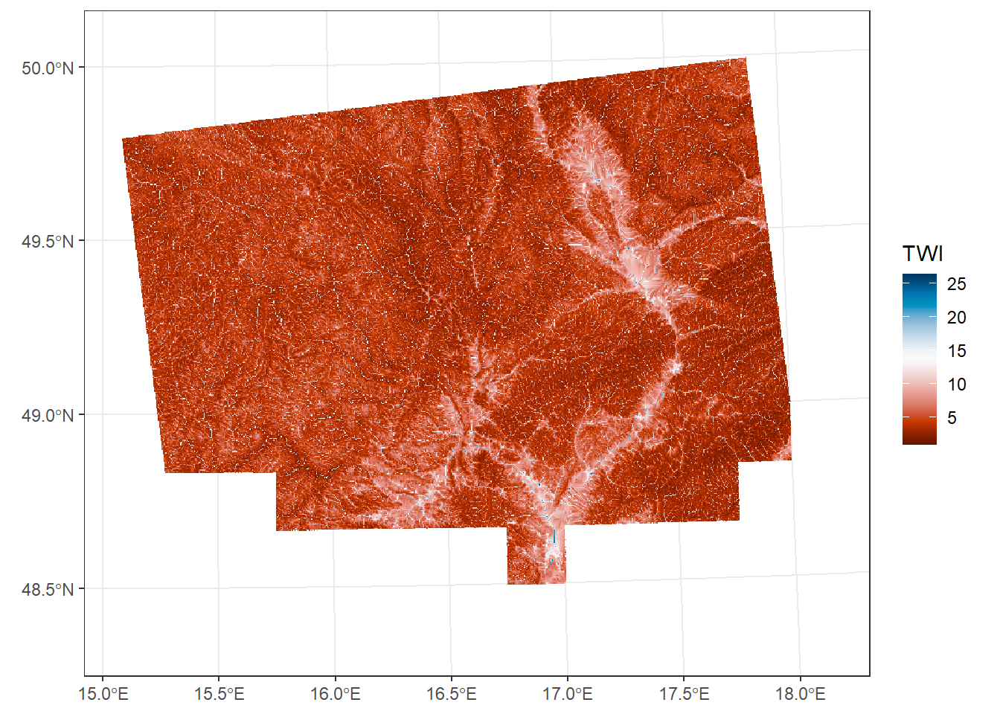
9.5. Maps
A map is a reduced, generalised, conventional representation of the Earth’s surface, transformed onto a plane using mathematically defined relationships.
Important map elements include:
map field
legend (without the title “Legend”)
scale bar
TITLE (in uppercase letters)
north arrow (if the map is not oriented to the north)
map imprint (author, place and year of creation, projection, data source)
marginal information (plots, images, tables, logos)
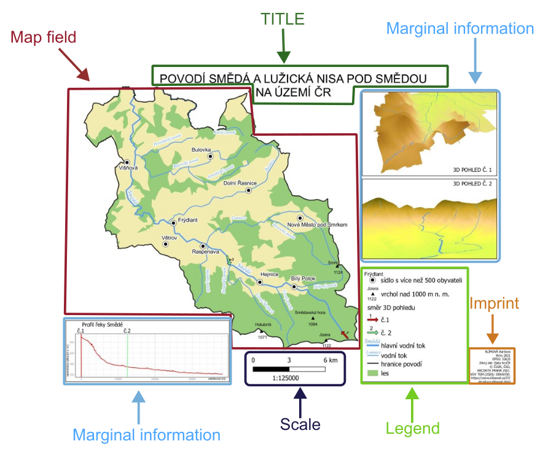
9.5.1. Basic map of study area
Firstly, we will create a basic map of the study area with a basemap from online sources such as OpenStreetMap or Esri (using the basemaps package). The map will include the most important map elements and a small overview map of the Czech Republic highlighting the study area.
From the data, we will use vegetation plots in South Moravia (CNFD-selection-2023-01-09-JMK.xlsx) read from Excel, and polygons of South Moravia and regions from the RCzechia package.
A list of possible basemap options can be found here or by using:
get_maptypes() # Shows available map services and their corresponding map types$osm
[1] "streets" "streets_de" "topographic"
$osm_stamen
[1] "toner" "toner_bg" "terrain" "terrain_bg" "watercolor"
$osm_stadia
[1] "alidade_smooth" "alidade_smooth_dark" "outdoors"
[4] "osm_bright"
$osm_thunderforest
[1] "cycle" "transport" "landscape" "outdoors"
[5] "transport_dark" "spinal" "pioneer" "mobile_atlas"
[9] "neighbourhood" "atlas"
$carto
[1] "light" "light_no_labels" "light_only_labels"
[4] "dark" "dark_no_labels" "dark_only_labels"
[7] "voyager" "voyager_no_labels" "voyager_only_labels"
[10] "voyager_labels_under"
$mapbox
[1] "streets" "outdoors" "light" "dark" "satellite" "hybrid"
[7] "terrain"
$esri
[1] "natgeo_world_map"
[2] "usa_topo_maps"
[3] "world_imagery"
[4] "world_physical_map"
[5] "world_shaded_relief"
[6] "world_street_map"
[7] "world_terrain_base"
[8] "world_topo_map"
[9] "world_dark_gray_base"
[10] "world_dark_gray_reference"
[11] "world_light_gray_base"
[12] "world_light_gray_reference"
[13] "world_hillshade_dark"
[14] "world_hillshade"
[15] "world_ocean_base"
[16] "world_ocean_reference"
[17] "antarctic_imagery"
[18] "arctic_imagery"
[19] "arctic_ocean_base"
[20] "arctic_ocean_reference"
[21] "world_boundaries_and_places_alternate"
[22] "world_boundaries_and_places"
[23] "world_reference_overlay"
[24] "world_transportation"
[25] "delorme_world_base_map"
[26] "world_navigation_charts"
$maptiler
[1] "aquarelle" "backdrop" "basic" "bright" "dataviz" "landscape"
[7] "ocean" "outdoor" "satellite" "streets" "toner" "topo"
[13] "winter" Some map services are freely available (e.g., OSM, Carto, Esri), while others require registration and a map token in R.
We first need to prepare a bounding box (xmin, ymin, xmax, ymax) around the South Moravia polygon to extract the basemap, and then create a spatial object from the bounding box. Since basemaps from ESRI, OSM, or Google are in CRS WGS 84 / Pseudo-Mercator, we need to project the bounding box accordingly:
bb_jmk_mercator <- South_Moravia_UTM33N %>%
st_bbox() %>% # creates a bounding box
st_as_sfc() %>% # converts the bounding box into a simple feature geometry (a polygon)
st_transform(crs = st_crs(3857)) # transforms the geometry to the WGS 84 / Pseudo-MercatorNow, we can create the map of study area with vegetation plots. We want to have two items in the map legend: the borders of South Moravia and the vegetation plots. To do this, we use a “fake” aes - it does not come from the data, it just tells ggplot what name to show in the legend for this sf object.
study_area <- ggplot() +
basemap_gglayer(bb_jmk_mercator, # Add a basemap layer for the bounding box
map_service = 'osm', # Use OpenStreetMap
map_type = 'streets') + # Street map style
scale_fill_identity() + # Use fill colors exactly as provided
geom_sf(data = South_Moravia_UTM33N,
colour = 'darkred',
fill = 'transparent',
size = 1, # Line width of the polygon border
aes(shape = 'South Moravia')) + # Assign label for legend
geom_sf(data = plots_UTM33N,
shape = 21,
colour = 'black',
fill = 'white',
aes(size = 'vegetation plot')) +
coord_sf(crs = st_crs (3857)) + # Set CRS to WGS84 / Pseudo-Mercator
theme_void() + # Remove background, grid, and axes
theme(legend.position = 'right',
legend.title = element_blank(), # Remove legend title
plot.margin = unit(c(0, 0.5, 0, 0), 'cm')) # Adjust plot margins: top, right, bottom, leftLoading basemap 'streets' from map service 'osm'...Warning: `lift()` was deprecated in purrr 1.0.0.
ℹ The deprecated feature was likely used in the slippymath package.
Please report the issue at
<https://www.github.com/milesmcbain/slippymath/issues>.study_areaWarning: Using size for a discrete variable is not advised.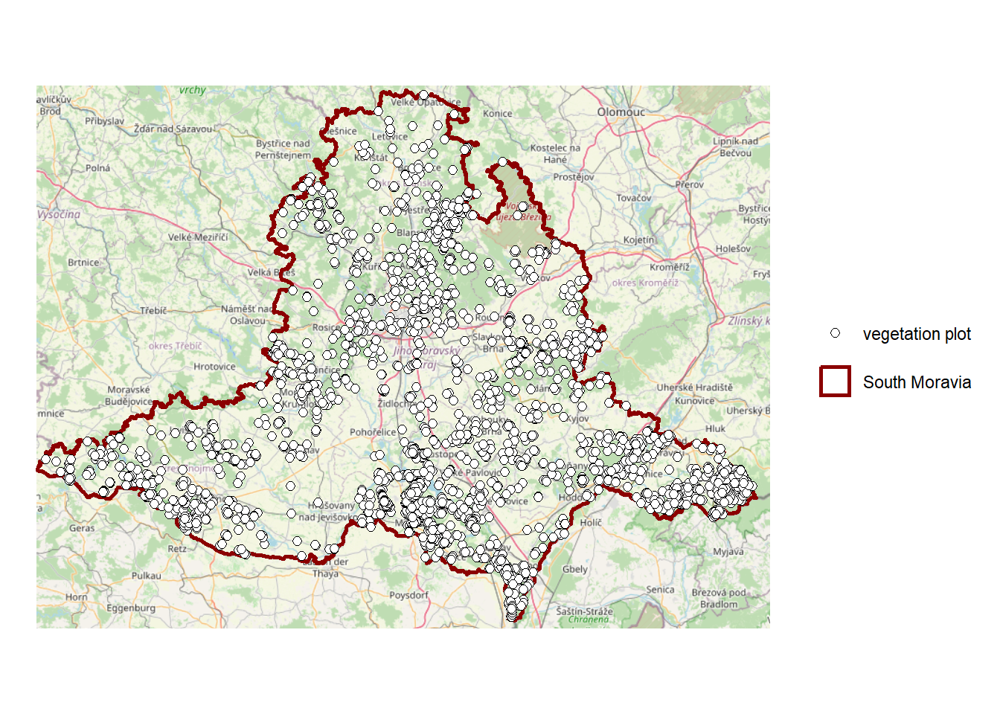
To the created map, we can add other elements, such as a scale bar and a north arrow. Besides ggplot(), we will use the name of our maps - study_area. To add a scale bar and a north arrow, we use annotation_scale() and annotation_north_arrow():
study_area_map <- study_area + # Use the previously created map of the study area
annotation_scale(location = 'bl', # Position of the scale bar: bottom-left (other options: br, tl, tr)
pad_x = unit(0.5, 'in'), # Horizontal padding from the edge of the plot
pad_y = unit(0.5, 'in'), # Vertical padding from the edge of the plot
style = "ticks") + # Style of the scale bar: "ticks" or "bar"
annotation_north_arrow(location = 'tr', # Position of the north arrow: top-right
which_north = 'true', # Use true north
height = unit(2, 'cm'), # Height of the north arrow
width = unit(2, 'cm'), # Width of the north arrow
pad_x = unit(0.2, 'in'), # Horizontal padding from the edge of the plot
pad_y = unit(0.2, 'in'), # Vertical padding from the edge of the plot
style = north_arrow_nautical) # Style of the north arrow (other options: north_arrow_orienteering, north_arrow_fancy_orienteering, north_arrow_minimal)
study_area_mapWarning: Using size for a discrete variable is not advised.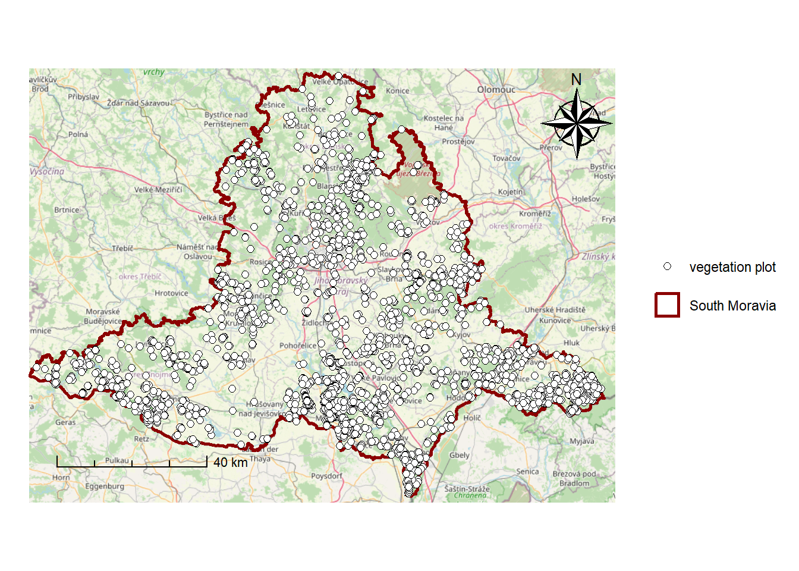
Next, we will create a map of the Czech Republic with the study area highlighted:
map_CR <- ggplot() +
geom_sf(data = regions,
fill = '#FFFFCC') +
geom_sf(data = South_Moravia_UTM33N,
color = 'darkred',
fill = '#FFCC99',
size = 0.4) +
geom_sf(data = bb_jmk_mercator,
fill = NA,
color = 'black',
size = 0.8) +
theme_void()
map_CR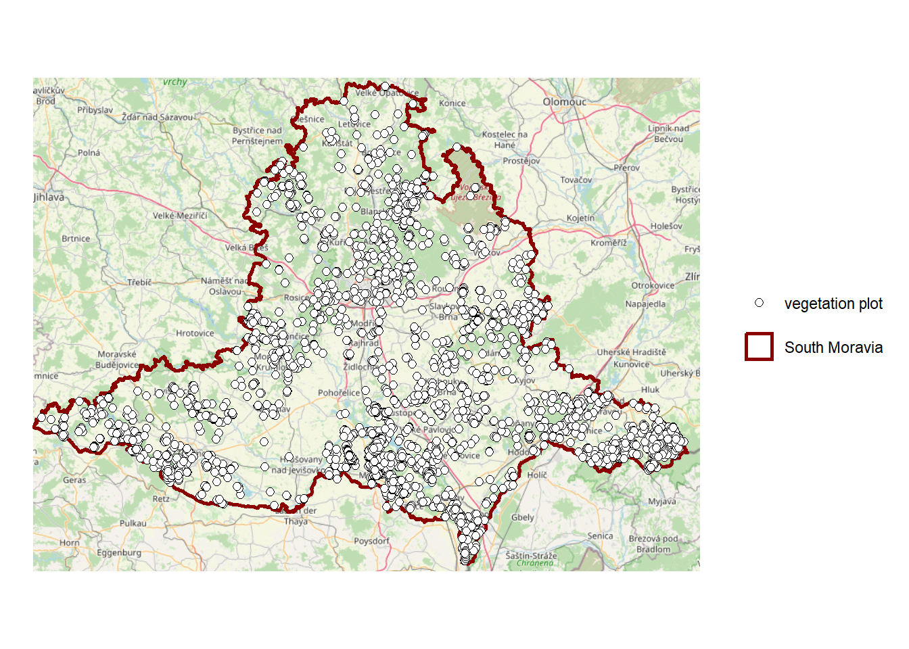
Finally, we will combine the study area map and the map of the Czech Republic into a single layout using the patchwork package, and save it:
final_map <- study_area_map +
inset_element(map_CR, # ggplot object for the inset map
left = 0.86, # Relative left position of inset (0 = left edge, 1 = right edge)
right = 1.32, # Relative right position of inset
bottom = 0.79, # Relative bottom position of inset (0 = bottom, 1 = top)
top = 0.97) + # Relative top position of inset
plot_annotation(theme = theme(plot.background = element_rect(fill = "white", colour = NA))) # Set background theme for the combined plot
final_mapWarning: Using size for a discrete variable is not advised.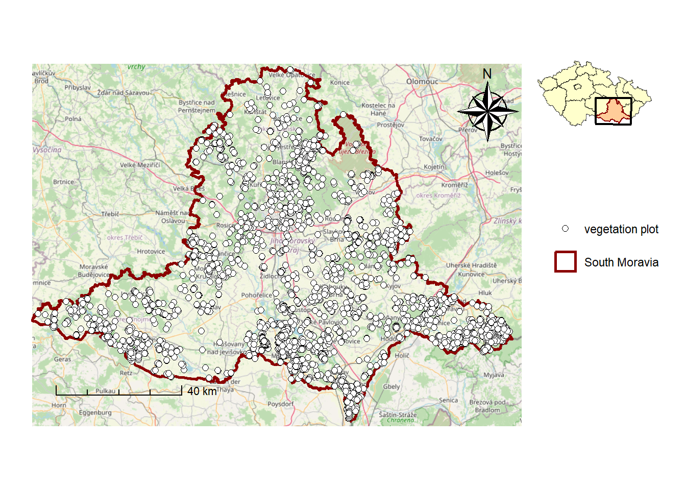
ggsave(filename = "maps/map_study_area.tiff", plot = final_map, width = 8, height = 5 , dpi = 300 )Warning: Using size for a discrete variable is not advised.9.5.2. Attribute map
We will create a map with the DEM as a basemap and vegetation plots for grasslands, forests, and shrubs, using shape to represent habitat type and the fill colour of points to represent soil reaction. Because we have multiple fill scales, we need to use the new_scale_fill function from the ggnewscale package, which allows us to define custom palettes for both the DEM and soil reaction.
For the fill scale of the DEM, we will use the function scale_fill_gradientn(), which creates an n-colour gradient scale for the fill aesthetics by specifying a vector of colors.
To scale vegetation plots by soil reaction, we will use the scale_fill_viridis_b(), which automatically divides continuous values of soil reaction into discrete colour bins (intervals) that can be adjusted using the n.breaks argument. The argument option = “H” specifies which version of the viridis colour palette is used. Other palette options can be found here.
palette_dem <- c("#8FCE00", "#FFE599", "#F6B26B", "#996633", "#993300")
map_plots <- ggplot() +
geom_spatraster(data = dem_S_Moravia,
alpha = 0.8) +
scale_fill_gradientn(colours = palette_dem,
na.value = "transparent",
name = "Altitude", # Legend title
guide = guide_colorbar(order = 3)) + # Legend order for DEM
geom_sf(data = South_Moravia_UTM33N,
colour = 'darkred',
fill = 'transparent',
size = 0.8,
aes(size = "South Moravia")) +
labs(shape = "") + # Remove default shape legend title
new_scale_fill() + # Allow a new fill scale for soil reaction
geom_sf(data = filter(plots_UTM33N, Broad.habitat.code %in% c("L", "K", "T")) |>
arrange(desc(Soil_Reaction)), # Arrange points so lower soil reaction is plotted on top
aes(fill = Soil_Reaction, shape = Broad.habitat.code)) + # Plot vegetation plots with fill and shape
scale_fill_viridis_b(option = "H",
direction = -1, # Reverse the color scale
name = "Soil reaction",
n.breaks = 5,
guide = guide_colorbar(order = 2)) + # Legend order for soil reaction
scale_shape_manual(name = "Habitat type",
values = c("K" = 21, "L" = 22, "T" = 24),
labels = c("K" = "Shrub", "L" = "Forest", "T" = "Grassland"),
guide = guide_legend(order = 1)) + # Legend order for habitat type
theme_void() +
annotation_scale(location = 'bl',
pad_x = unit(0.5, 'in'),
pad_y = unit (0.5,'in')) +
annotation_north_arrow(location = 'tl',
which_north = 'true',
height = unit(2, 'cm'),
width = unit(2, "cm"),
pad_x = unit(0.2, 'in'),
pad_y = unit(0.2, 'in'),
style = north_arrow_fancy_orienteering (text_size = 10, # N label size
line_col = "black", # Arrow outline color
fill = c("white", "black"))) + # Arrow fill colors
theme(legend.position = 'right',
plot.background = element_rect(fill = "white", colour = NA),
plot.margin = unit(c(0, 0.2, 0, 0), 'cm'))<SpatRaster> resampled to 500716 cells.map_plots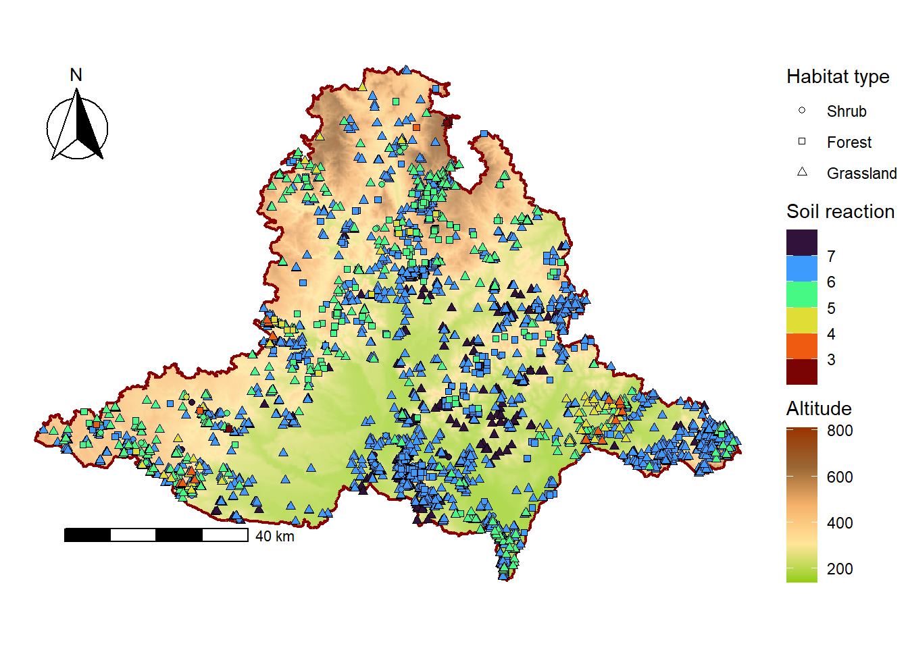
ggsave(filename = "maps/map_plots.tiff", plot = map_plots, width = 8, height = 6 , dpi = 300)We can also scale polygons. For this map, we will also use regions from the RCzechia package, and their fill will represent the population of each region. We will join the Excel table (sheet1) to the regions’ sf object using the KOD_CZNUTS column.
regions_population <- read_excel("data/regions/regions_data.xlsx", sheet = 1)
regions_population_sf <- regions %>%
left_join(regions_population, by = "KOD_CZNUTS3")
map_regions_population <- ggplot() +
geom_sf(data = regions_population_sf,
aes(fill = `2020`), # Backticks are required because the column name starts with a number.
colour = "black",
size = 0.1) +
scale_fill_viridis_b(name = "Population in 2020",
n.breaks = 5, # Number of breaks in color scale
labels = comma) + # Format numeric labels in the legend using commas
labs(title = "POPULATION IN CZECH REGIONS IN 2020") +
theme_void() +
annotation_scale(location = 'br',
pad_x = unit(0.2, 'in'),
pad_y = unit (0.1,'in')) +
annotation_north_arrow (location = 'tr',
which_north = 'true',
height = unit(2, 'cm'),
width = unit(2, "cm"),
pad_x = unit(0.2, 'in'),
pad_y = unit(0.2, 'in'),
style = ggspatial::north_arrow_nautical) +
theme(legend.position = 'right',
plot.background = element_rect(fill = "white", colour = NA),
plot.margin = unit(c(0, 0.2, 0, 0), 'cm'),
plot.title = element_text(size = 16, hjust = 0.5, vjust = 2))
map_regions_population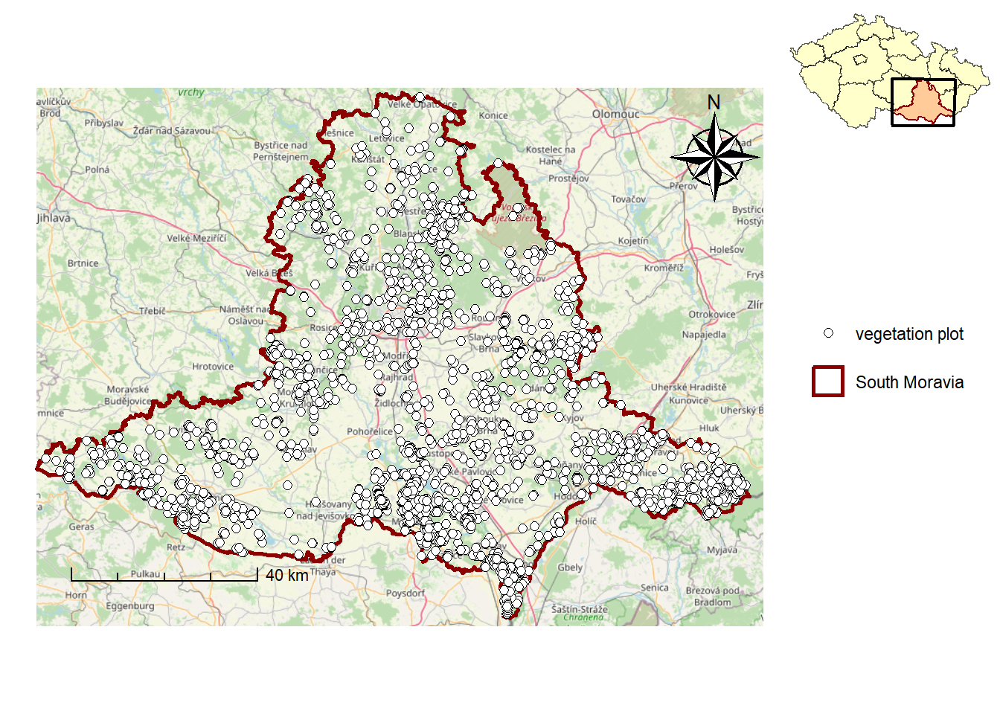
ggsave(filename = "maps/map_regions_population.tiff", plot = map_regions_population, width = 7, height = 4, dpi = 300)We can add labels to the regions using geom_sf_text:
regions_population_centroids <- st_centroid(regions_population_sf) # Create centroids for regionsWarning: st_centroid assumes attributes are constant over geometriesmap_regions_population +
geom_sf_text(data = regions_population_centroids,
aes(label = NAZ_CZNUTS3), # Column used for labels
size = 2,
color = "black") Warning in st_point_on_surface.sfc(sf::st_zm(x)): st_point_on_surface may not
give correct results for longitude/latitude data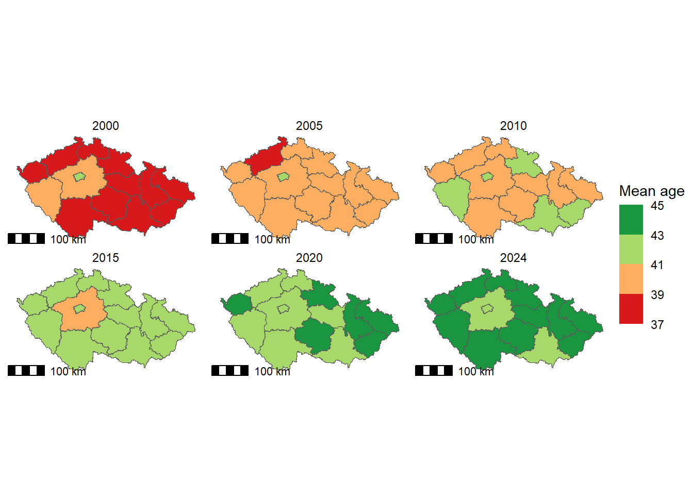
*Or add frames around the labels using geom_sf_label:
map_regions_population +
geom_sf_label(data = regions_population_centroids,
aes(label = NAZ_CZNUTS3),
size = 2,
color = "black",
fill = "white") # Fill of the frameWarning in st_point_on_surface.sfc(sf::st_zm(x)): st_point_on_surface may not
give correct results for longitude/latitude data*Alternatively, if overlapping is an issue, we can use geom_text_repel from package ggrepel:
map_regions_population +
geom_text_repel(data = regions_population_centroids,
aes(x = st_coordinates(geometry)[,1], # X-coordinates of centroids
y = st_coordinates(geometry)[,2], # Y-coordinates of centroids
label = NAZ_CZNUTS3), # Text labels
size = 2,
color = "black")*9.5.3. Faceted maps
In this section, we create faceted maps, which are particularly useful for visualising the same variable across different time periods, categories, or scenarios without having to manually create multiple plots. This approach also eliminates the need to write loops to generate separate maps for each year or group.
We will again work with Czech regions and examine differences in mean age across regions for the period 2000–2024, in five-year intervals. First, we need to reshape our data into a long format, where each row corresponds to a single region and year, and the column Mean_age stores the mean age values.
To fill the regions based on the mean age, we will use scale_fill_fermenter(), which creates a binned colour scale for fill aesthetics using ColorBrewer palettes. If you want to see which palettes can be used, you can either follow this link or the RColorBrewer package and this function:
display.brewer.all()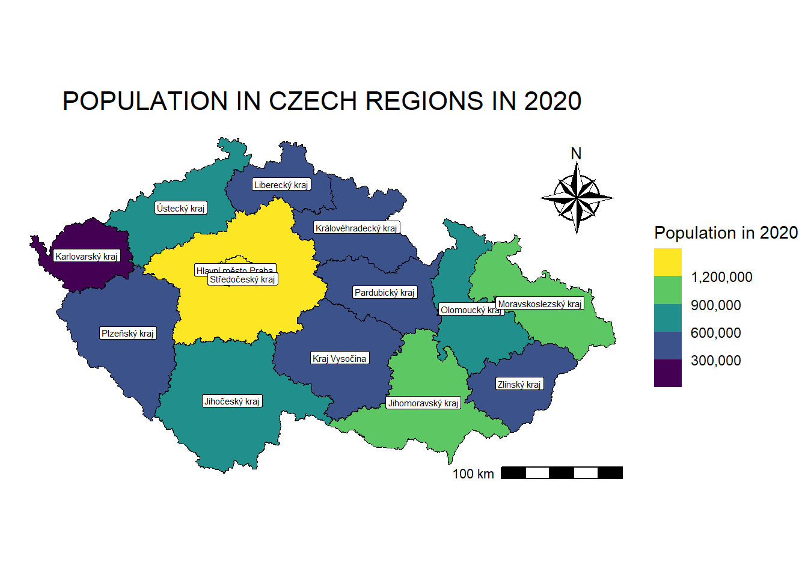
regions_age <- read_excel("data/regions/regions_data.xlsx", sheet = 2)
regions_age_long <- regions %>%
left_join(regions_age, by = "KOD_CZNUTS3") %>%
pivot_longer(
cols = c(`2000`, `2005`, `2010`,`2015`,`2020`, `2024`),
names_to = "year",
values_to = "Mean_age") %>%
select(KOD_CZNUTS3, year, Mean_age)
maps_age <- ggplot() +
geom_sf(data = regions_age_long,
aes(fill = Mean_age)) +
scale_fill_fermenter(name = "Mean age",
palette = "RdYlGn", # Red-yellow-green palette
direction = 1, # Keep palette ascending
limits = c(37, 45), # Set min and max values for fill
breaks = seq(37, 45, 2)) + # Define legend breaks
facet_wrap(. ~ year, # Create separate facet for each year
scales = "fixed") + # Keep the same scale limits for all facets
annotation_scale(location = "bl",
pad_x = unit(0.0, "in"),
pad_y = unit(0.0, "in"),
width_hint = 0.2) +
theme_void() +
theme(legend.position = 'right',
plot.background = element_rect(fill = "white", colour = NA),
plot.margin = unit(c(0, 0.2, 0, 0.2), 'cm'))
maps_age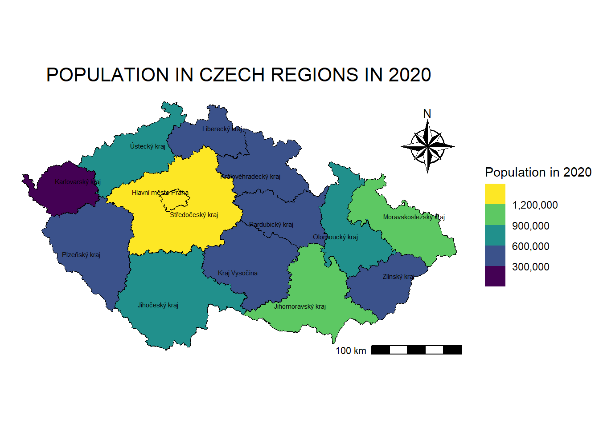
ggsave(filename = "maps/map_regions_population_age.tiff", plot = maps_age, width = 10, height = 4, dpi = 300)*9.5.4. Scatterpie in maps
In this section, we use the scatterpie package to visualise proportional data as pie charts directly on a map. This approach allows us to represent multiple categories for each spatial unit by placing pie charts at specific coordinates, such as the centroids of regions.
We will work with Czech regions and illustrate the distribution of different land-use types in the year 2024. First, we calculate the centroids of the regions to position the pie charts accurately.
regions_land_use <- read_excel("data/regions/regions_data.xlsx", sheet = 4)
regions_land_use_sf <- regions %>%
left_join(regions_land_use, by = "KOD_CZNUTS3")
regions_centroids <- regions_land_use_sf %>%
st_point_on_surface %>% # Ensures the point lies within each polygon
st_coordinates() %>% # Extract X and Y coordinates
as.data.frame() %>% # Convert to data frame
bind_cols(regions_land_use_sf) # Attach spatial and attribute data back togetherWarning: st_point_on_surface assumes attributes are constant over geometriesWarning in st_point_on_surface.sfc(st_geometry(x)): st_point_on_surface may not
give correct results for longitude/latitude datalanduse_colors <- c("Agricultural land" = "#E6B800",
"Arable land" = "#FFD966",
"Permanent grassland" = "#6AA84F",
"Barren land" = "#B7B7B7",
"Forest land" = "#38761D",
"Water body area" = "#3C78D8",
"Built-up area and courtyard" = "#A61C00")
map_landuse <- ggplot() +
geom_sf(data = regions_land_use_sf,
fill = "#FFF5EE",
color = "black",
size = 0.4) +
geom_scatterpie(data = regions_centroids, # Add pie charts
aes(x = X, y = Y),
cols = names(landuse_colors), # Columns with land-use types
color = "grey20",
pie_scale = 1.5) + # Pie size
coord_sf() + # Ensure consistent coordinate system
scale_fill_manual(values = landuse_colors,
name = "land use type") +
annotation_scale(location = "br",
pad_x = unit(0.2, "in"),
pad_y = unit(0, "in"),
width_hint = 0.22) +
labs(title = "LAND USE PROPORTIONS BY REGION FOR YEAR 2024",
caption = "Source: Czech Statistical Office") +
theme_bw() +
theme(legend.position = "bottom",
legend.direction = "horizontal",
plot.caption = element_text(size = 7, hjust = 1.1, vjust = 0),
legend.title = element_text(size = 8),
legend.text = element_text(size = 7),
panel.grid = element_blank(),
panel.border = element_blank(),
axis.title = element_blank(),
axis.text = element_blank(),
axis.ticks = element_blank(),
plot.title = element_text(size = 10, hjust = 0.5),
plot.margin = unit(c(0.1, 0.1, 0.1, 0.1), 'cm'))
map_landuseggsave(filename = "maps/map_regions_scatterpie.tiff", plot = map_landuse, width = 6, height = 4, dpi = 300)9.5.5. Grid mapping
In this section, we create grid-based maps, which are useful for visualising spatial variables across a regular grid. Grids represent polygons of equal size and shape, allowing them to be processed in the same way as other polygon layers (e.g., administrative boundaries).
We will use the Pladias dataset of grid cells to map continuous variables such as the climatic moisture index (cmi), which is derived from the CHELSA BIOCLIM+ database. We will use the Pladias dataset of grid cells to map continuous variables such as the climatic moisture index (cmi), which is derived from the CHELSA BIOCLIM+ database. For the fill scale, we will use the function scale_fill_gradientn(), which creates an n-colour gradient scale for fill aesthetics by specifying a vector of colors.
pladias <- read_sf("data/Pladias_data/kvadranty_Pladias.shp")
data_pladias <- read_excel("data/Pladias_data/Pladias_variables.xlsx")
pladias_var <- pladias %>%
left_join(data_pladias, by = "code")
ggplot() +
geom_sf(data = pladias_var,
aes(fill = cmi)) +
scale_fill_gradientn(colours = c("#d73027", "#fee08b", "#d9ef8b", "#1a9850", "#4575b4"),
name = "Climatic Moisture Index (CMI)",
limits = range(pladias_var$cmi, na.rm = TRUE)) + # Min and max cmi values for the legend
annotation_scale(
location = "bl",
pad_x = unit(0.0, "in"),
pad_y = unit(0.0, "in"),
width_hint = 0.2) +
annotation_north_arrow (location = 'tr',
which_north = 'true',
height = unit(1, 'cm'),
width = unit(0.8, "cm"),
pad_x = unit(0.2, 'in'),
pad_y = unit(0.2, 'in'),
style = north_arrow_orienteering) +
theme_void() +
theme(legend.position = 'right',
plot.background = element_rect(fill = "white", colour = NA),
plot.margin = unit(c(0, 0.2, 0, 0.2), 'cm'))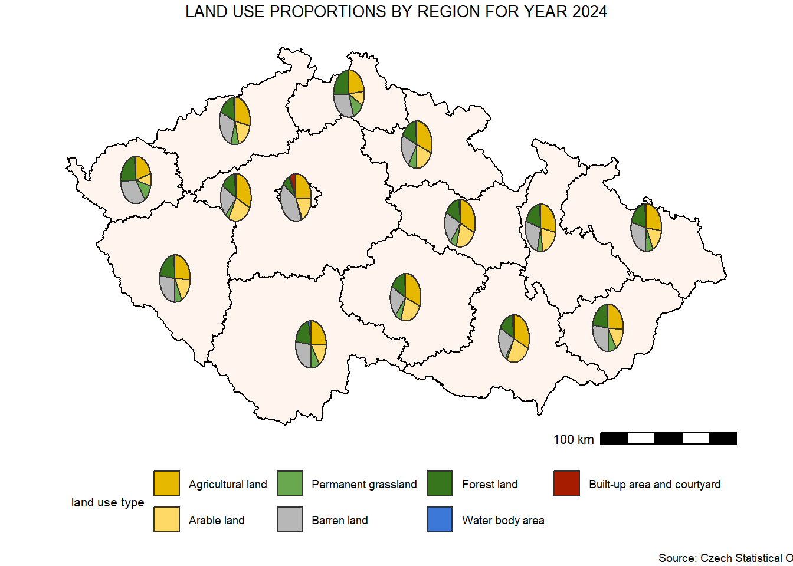
Grid mapping can also be used to visualise species occurrences, such as the presence of Lilium martagon within grid cells. In this example, we will use scale_fill_manual() to assign specific colors to categorical values (presence/absence).
pladias <- read_sf("data/Pladias_data/kvadranty_Pladias.shp")
Lilium_martagon <- read_csv2("data/Pladias_data/Lilium_martagon.csv")ℹ Using "','" as decimal and "'.'" as grouping mark. Use `read_delim()` for more control.Rows: 2368 Columns: 2
── Column specification ────────────────────────────────────────────────────────
Delimiter: ";"
chr (2): code, presence
ℹ Use `spec()` to retrieve the full column specification for this data.
ℹ Specify the column types or set `show_col_types = FALSE` to quiet this message.pladias_Lilium_martagon <- pladias %>%
left_join(Lilium_martagon, by = "code")
ggplot() +
geom_sf(data = pladias_Lilium_martagon,
aes(fill = presence )) +
scale_fill_manual(name = expression(italic("Lilium martagon")), # Legend title with italicized species name
values = c("yes" = "black", "no" = "white"),
labels = c("yes" = "presence", "no" = "absence")) +
labs(title = expression("DISTRIBUTION OF " * italic("LILIUM MARTAGON")),
caption = "Source: Pladias Database of the Czech Flora") +
annotation_north_arrow (location = 'tr',
which_north = 'true',
height = unit(1.1, 'cm'),
width = unit(0.8, "cm"),
pad_x = unit(0.2, 'in'),
pad_y = unit(0.2, 'in'),
style = north_arrow_orienteering) +
annotation_scale(location = "bl",
style = "ticks",
pad_x = unit(0.0, "in"),
pad_y = unit(0.0, "in"),
width_hint = 0.2) +
theme_void() +
theme(legend.position = 'right',
plot.title = element_text(hjust = 0.5), # Align the map title to the center
plot.caption = element_text(hjust = 1), # Align the map source to the right
plot.background = element_rect(fill = "white", colour = NA),
plot.margin = unit(c(0, 0.2, 0, 0.2), 'cm'))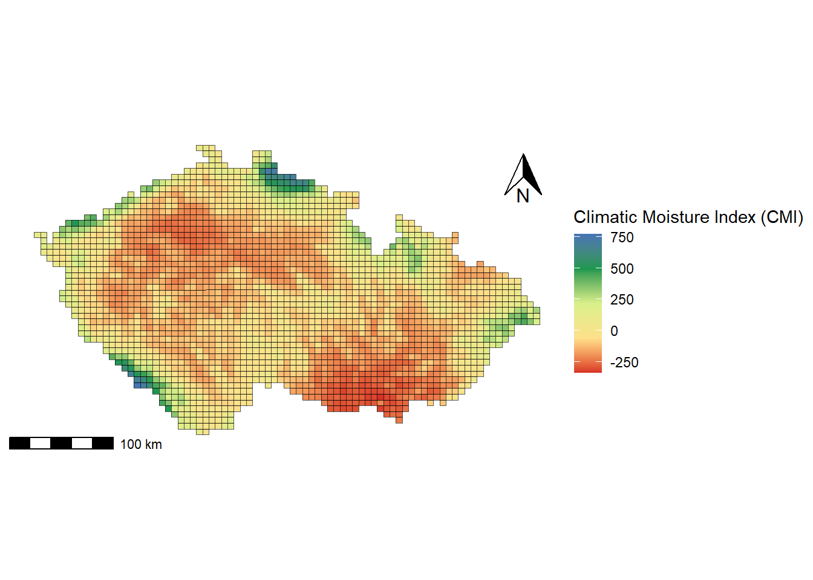
9.6. Exercises
Load the soil pH raster (pH_LUCAS_CR.tif) from the folder soil_pH_LUCAS. Determine its spatial resolution and coordinate reference system (CRS). If it uses a geographic CRS (WGS84), reproject it to a metric CRS suitable for the Czech Republic. Crop and mask the raster to the extent of South Moravia. Load the vegetation plots for South Moravia from the CNFD dataset (CNFD-selection-2023-01-09-JMK.xlsx) as simple feature objects, and plot them using the soil pH raster as the basemap. * Find the soil pH value for the vegetation plot with the PlotID number 270. (Note: The vegetation plots must be in the same CRS as the raster.)
Calculate the area (in square meters) of the Pálava PLA polygon (select the Pálava polygon from the protected areas in RCzechia).
* Select all vegetation plots located within the Pálava PLA and within a 5 km buffer zone around it. Determine how many plots there are and calculate their average number of species.
Create a raster showing the temperature difference between January 2013 (data/climate_raster/CHELSA_tmean_2013_01_CR) and January 1979 (data/climate_raster/CHELSA_tmean_1979_01_CR). Plot it with a legend, scale bar, and north arrow. Save the map as a TIFF file with a resolution of 300 dpi.
Create a map of the Pálava protected landscape area (select the Pálava polygon from the protected areas in RCzechia). Use orthophoto imagery as the basemap and overlay the PLA boundary. Display only the vegetation plots located within Pálava (from CNFD-selection-2023-01-09-JMK.xlsx). Insert an inset map of the Czech Republic showing the location of Pálava (as a point — centroid of the polygon). * Scale the fill of the points according to the number of species — plots with more species should be displayed on top. Add standard map elements: a legend, scale bar, title, and optionally a north arrow if the map is not oriented northwards. Save the map as a TIFF file with 300 dpi.
9.7. Further reading
Spatial data science (with applications in R) - online book: https://r-spatial.org/book/
Geocomputation wit R - online book: https://r.geocompx.org/
R as GIS for Economists: https://tmieno2.github.io/R-as-GIS-for-Economists-Quarto/
Colour palettes in R: https://r-charts.com/color-palettes/